<!DOCTYPE html>


<html lang="zh-CN">


<head>
  <meta charset="utf-8" />
    
  <meta name="viewport" content="width=device-width, initial-scale=1, maximum-scale=1" />
  <title>
    吴恩达机器学习笔记 |  VincereZhou&#39;s blog
  </title>
  <meta name="generator" content="hexo-theme-ayer">
  
  <link rel="shortcut icon" href="/images/mojie.jpg" />
  
  
<link rel="stylesheet" href="/dist/main.css">

  <link rel="stylesheet" href="https://cdn.jsdelivr.net/gh/Shen-Yu/cdn/css/remixicon.min.css">
  
<link rel="stylesheet" href="/css/custom.css">

  
  <script src="https://cdn.jsdelivr.net/npm/pace-js@1.0.2/pace.min.js"></script>
  
  

  

<link rel="alternate" href="/atom.xml" title="VincereZhou's blog" type="application/atom+xml">
</head>

</html>

<body>
  <div id="app">
    
      
    <main class="content on">
      <section class="outer">
  <article
  id="post-吴恩达机器学习笔记"
  class="article article-type-post"
  itemscope
  itemprop="blogPost"
  data-scroll-reveal
>
  <div class="article-inner">
    
    <header class="article-header">
       
<h1 class="article-title sea-center" style="border-left:0" itemprop="name">
  吴恩达机器学习笔记
</h1>
 

    </header>
     
    <div class="article-meta">
      <a href="/posts/a473f09a/" class="article-date">
  <time datetime="2021-10-10T03:37:30.000Z" itemprop="datePublished">2021-10-10</time>
</a> 
  <div class="article-category">
    <a class="article-category-link" href="/categories/%E7%90%86%E8%AE%BA%E5%AD%A6%E4%B9%A0/">理论学习</a> / <a class="article-category-link" href="/categories/%E7%90%86%E8%AE%BA%E5%AD%A6%E4%B9%A0/%E6%9C%BA%E5%99%A8%E5%AD%A6%E4%B9%A0/">机器学习</a>
  </div>
  
<div class="word_count">
    <span class="post-time">
        <span class="post-meta-item-icon">
            <i class="ri-quill-pen-line"></i>
            <span class="post-meta-item-text"> 字数统计:</span>
            <span class="post-count">18k</span>
        </span>
    </span>

    <span class="post-time">
        &nbsp; | &nbsp;
        <span class="post-meta-item-icon">
            <i class="ri-book-open-line"></i>
            <span class="post-meta-item-text"> 阅读时长≈</span>
            <span class="post-count">71 分钟</span>
        </span>
    </span>
</div>
 
    </div>
      
    <div class="tocbot"></div>


  
    <div class="article-entry" itemprop="articleBody">
       
  <p>吴恩达老师的课确实详细易懂，就是感觉 SVM 部分没太听清楚。</p>
<p>感谢吴恩达老师！之前觉得好长好啰嗦，听完以后我想说吴老师不要走，我还要听课。</p>
<h1>2 单变量线性回归</h1>
<h2 id="梯度下降">梯度下降</h2>
<h3 id="所有参数应该同时更新">所有参数应该同时更新</h3>
<p>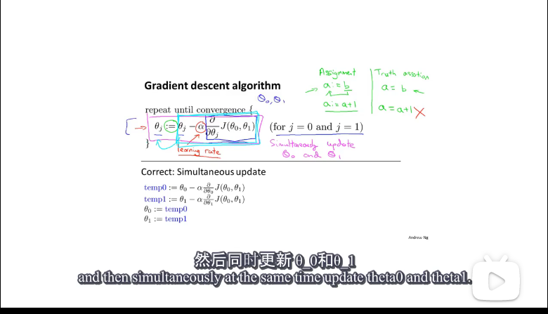</p>
<h2 id="“Batch”-Gradient-Descent">“Batch” Gradient Descent</h2>
<p>普通的梯度下降也成为 “Batch” Gradient Descent，定义为每一步迭代都使用<strong>训练集的全部数据</strong>。</p>
<h1>5 多变量线性回归</h1>
<p>线性回归可以写成向量的形式，<strong>θ<sup>T</sup>X</strong> (假设 x<sub>0</sub> = 1)</p>
<p>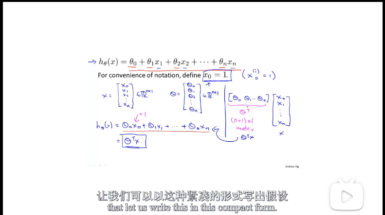</p>
<h2 id="多元梯度下降">多元梯度下降</h2>
<p>多元梯度下降如下，和单变量差不多。</p>
<p>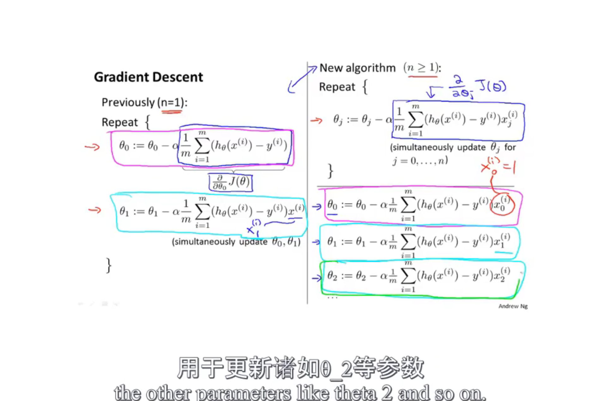</p>
<h2 id="特征缩放">特征缩放</h2>
<p>如果特征的范围不同，代价函数的等高线就是一个<strong>很扁的椭圆</strong>，下降速度很慢。如果特征的范围都差不多，比如均在[0,1]范围内，则等高线就是一个圆形，梯度下降会始终沿着指向圆心的方向。</p>
<p>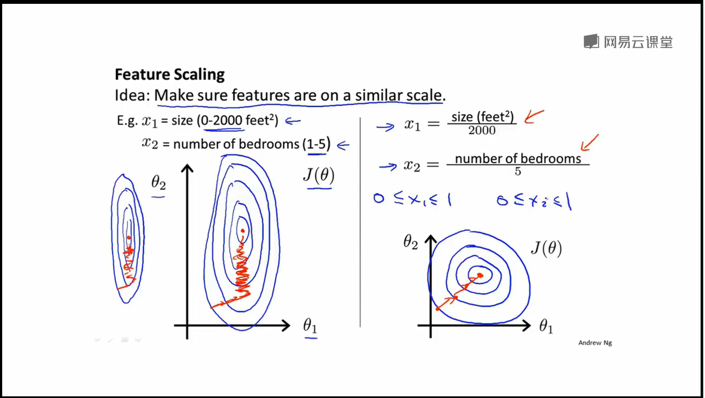</p>
<p>一般来说，我们会将特征缩放到大概 <strong>-1 到 1</strong> 的范围。</p>
<h3 id="均值归一化-Mean-normalization">均值归一化 (Mean normalization)</h3>
<p>中心化：将每个值减去均值，使得特征的均值为0。<strong>特征缩放不需要太精确，只需要将不同的特征调整为近似的范围即可</strong>。</p>
<p>下式中分母可以是标准差，也可以是最大值减去最小值得到的范围。</p>
<p>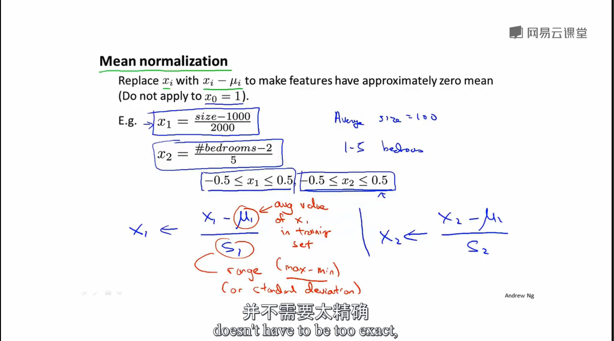</p>
<p>查了一个<a target="_blank" rel="noopener" href="https://medium.com/analytics-vidhya/mean-normalization-and-feature-scaling-a-simple-explanation-3b9be7bfd3e8">网页资料</a>，均值标准化 (Mean normalization) 一般分母是除以范围，公式如下</p>
<p style=""></p><p>如果除以标准差，则称为<strong>标准化(Standardization)</strong> ，公式如下</p>
<p style=""></p><h2 id="学习率">学习率</h2>
<p>通过查看每次迭代 J(θ) 的变化，确保梯度下降方法正确运行（正常情况下，每一次迭代代价函数都在下降）。</p>
<p>通过给定ε (如 10<sup>-3</sup> ) , 如果 J(θ) 在一次迭代后下降幅度低于 ε ，则判定收敛，但有时可能人手动判断比较好。</p>
<p>如果每次迭代，代价函数不是一直下降，那么就<strong>降低你的学习率</strong>。下图中可以通过尝试不同的学习率，来找到一个合适的值。</p>
<p>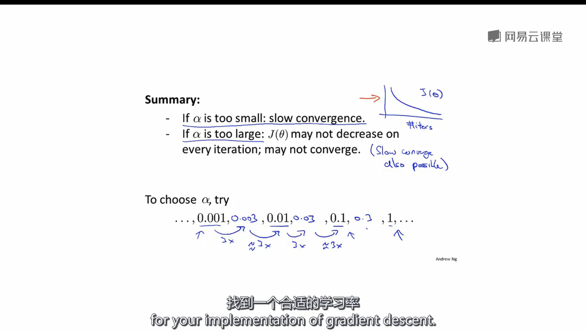</p>
<h2 id="多项式拟合">多项式拟合</h2>
<p>添加二项式、三项式等，注意如果要用<strong>梯度下降</strong>，这里需要进行<strong>特征缩放</strong>。</p>
<h2 id="正规方程">正规方程</h2>
<p>除了梯度下降，我们还可以用正规方程来对线性回归求解。</p>
<p>简单的话，就是求<strong>导数/偏导数为0</strong>的一组参数。</p>
<p>计算公式如下（缺证明）</p>
<p>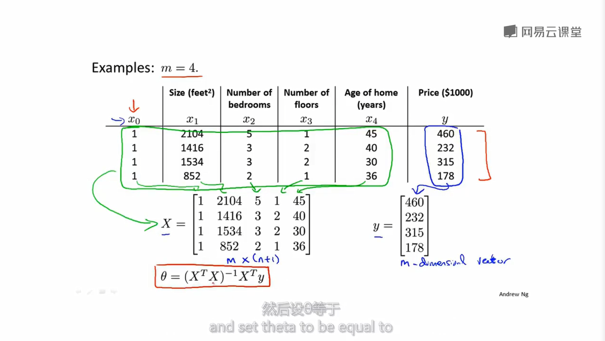</p>
<p>如果你用正规方程求解，<strong>不需要做特征缩放</strong>。</p>
<h3 id="何时用特征下降，何时用正规方程">何时用特征下降，何时用正规方程</h3>
<p>当<strong>特征数量很多</strong>时，特征下降方法可以正常运行，但是正规方程速度很慢，因为<strong>需要对 (X<sup>T</sup>X) 进行求逆</strong>（求逆的计算量一般以矩阵维度的三次方增长，即 O(n<sup>3</sup>) ）。</p>
<p>一般来说，如果特征数量不超过一万，倾向于使用正规方程，反之使用梯度下降。</p>
<p>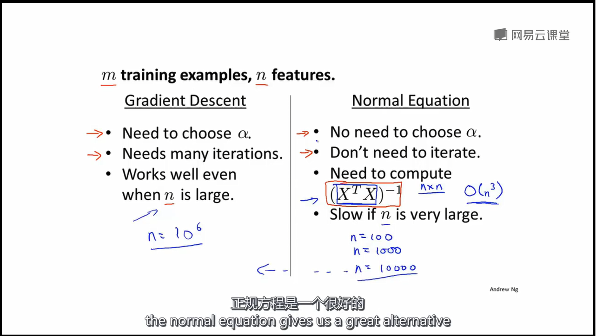</p>
<h3 id="正规方程在矩阵不可逆情况下的求解">正规方程在矩阵不可逆情况下的求解</h3>
<p>问题：如果  (X<sup>T</sup>X) 不可逆怎么办？</p>
<p>如果你在 Octave 使用 <code>pinv()</code> 求逆（<code>pinv()</code> 和 <code>inv()</code> ），你永远可以得到一个解（伪逆函数）。</p>
<p>一般来说不会出现不可逆的情况，如果出现了可能的原因如下：</p>
<ul>
<li>
<p>冗余的特征（线性相关的特征）</p>
<p>例如 x<sub>1</sub> 是以平方英尺为单位的面积，x<sub>2</sub> 是以平方米为单位的面积，很明显这两个特征信息是一样的。</p>
</li>
<li>
<p>特征过多（特折数目远大于样本数目）</p>
<p>建议删除一些特征或使用正则化</p>
</li>
</ul>
<h1>6 Octave 教程</h1>
<h2 id="基本操作">基本操作</h2>
<figure class="highlight plain"><table><tr><td class="gutter"><pre><span class="line">1</span><br><span class="line">2</span><br><span class="line">3</span><br><span class="line">4</span><br><span class="line">5</span><br><span class="line">6</span><br><span class="line">7</span><br><span class="line">8</span><br><span class="line">9</span><br><span class="line">10</span><br><span class="line">11</span><br><span class="line">12</span><br><span class="line">13</span><br><span class="line">14</span><br><span class="line">15</span><br><span class="line">16</span><br><span class="line">17</span><br><span class="line">18</span><br><span class="line">19</span><br><span class="line">20</span><br><span class="line">21</span><br><span class="line">22</span><br><span class="line">23</span><br><span class="line">24</span><br><span class="line">25</span><br><span class="line">26</span><br><span class="line">27</span><br><span class="line">28</span><br><span class="line">29</span><br><span class="line">30</span><br><span class="line">31</span><br><span class="line">32</span><br><span class="line">33</span><br><span class="line">34</span><br><span class="line">35</span><br><span class="line">36</span><br><span class="line">37</span><br><span class="line">38</span><br><span class="line">39</span><br><span class="line">40</span><br><span class="line">41</span><br><span class="line">42</span><br><span class="line">43</span><br><span class="line">44</span><br><span class="line">45</span><br><span class="line">46</span><br><span class="line">47</span><br><span class="line">48</span><br><span class="line">49</span><br><span class="line">50</span><br><span class="line">51</span><br><span class="line">52</span><br><span class="line">53</span><br><span class="line">54</span><br><span class="line">55</span><br><span class="line">56</span><br><span class="line">57</span><br><span class="line">58</span><br><span class="line">59</span><br><span class="line">60</span><br><span class="line">61</span><br><span class="line">62</span><br><span class="line">63</span><br><span class="line">64</span><br><span class="line">65</span><br><span class="line">66</span><br><span class="line">67</span><br><span class="line">68</span><br><span class="line">69</span><br><span class="line">70</span><br><span class="line">71</span><br><span class="line">72</span><br><span class="line">73</span><br><span class="line">74</span><br><span class="line">75</span><br><span class="line">76</span><br><span class="line">77</span><br><span class="line">78</span><br><span class="line">79</span><br><span class="line">80</span><br><span class="line">81</span><br><span class="line">82</span><br><span class="line">83</span><br><span class="line">84</span><br><span class="line">85</span><br><span class="line">86</span><br><span class="line">87</span><br><span class="line">88</span><br><span class="line">89</span><br><span class="line">90</span><br><span class="line">91</span><br><span class="line">92</span><br><span class="line">93</span><br><span class="line">94</span><br><span class="line">95</span><br><span class="line">96</span><br><span class="line">97</span><br><span class="line">98</span><br><span class="line">99</span><br><span class="line">100</span><br><span class="line">101</span><br><span class="line">102</span><br><span class="line">103</span><br><span class="line">104</span><br><span class="line">105</span><br><span class="line">106</span><br><span class="line">107</span><br><span class="line">108</span><br><span class="line">109</span><br><span class="line">110</span><br><span class="line">111</span><br><span class="line">112</span><br><span class="line">113</span><br><span class="line">114</span><br><span class="line">115</span><br><span class="line">116</span><br><span class="line">117</span><br><span class="line">118</span><br><span class="line">119</span><br><span class="line">120</span><br><span class="line">121</span><br><span class="line">122</span><br><span class="line">123</span><br><span class="line">124</span><br><span class="line">125</span><br><span class="line">126</span><br><span class="line">127</span><br><span class="line">128</span><br><span class="line">129</span><br><span class="line">130</span><br><span class="line">131</span><br><span class="line">132</span><br><span class="line">133</span><br><span class="line">134</span><br><span class="line">135</span><br><span class="line">136</span><br></pre></td><td class="code"><pre><span class="line">&gt;&gt; 1 &#x3D;&#x3D;2</span><br><span class="line">ans &#x3D; 0</span><br><span class="line">&gt;&gt; 1&#x2F;2</span><br><span class="line">ans &#x3D; 0.5000</span><br><span class="line">&gt;&gt; 2&#x2F;2</span><br><span class="line">ans &#x3D; 1</span><br><span class="line">&gt;&gt; a &#x3D; 3</span><br><span class="line">a &#x3D; 3</span><br><span class="line">&gt;&gt; a &#x3D;&#x3D; 3</span><br><span class="line">ans &#x3D; 1</span><br><span class="line">&gt;&gt; a ~&#x3D; 3</span><br><span class="line">ans &#x3D; 0</span><br><span class="line">&gt;&gt; 1 &amp;&amp; 0</span><br><span class="line">ans &#x3D; 0</span><br><span class="line">&gt;&gt; 1 || 0</span><br><span class="line">ans &#x3D; 1</span><br><span class="line">&gt;&gt; xor(1,0)</span><br><span class="line">ans &#x3D; 1</span><br><span class="line">&gt;&gt; a &#x3D; 3;</span><br><span class="line">&gt;&gt; a</span><br><span class="line">a &#x3D; 3</span><br><span class="line">&gt;&gt; c&#x3D; (3&gt;&#x3D;1);</span><br><span class="line">&gt;&gt; c</span><br><span class="line">c &#x3D; 1</span><br><span class="line">&gt;&gt; disp(c)</span><br><span class="line">1</span><br><span class="line">&gt;&gt; disp(spintf(&#39;2 decimals: %0.2f&#39;, c))</span><br><span class="line">error: &#39;spintf&#39; undefined near line 1, column 1</span><br><span class="line">&gt;&gt; disp(sprintf(&#39;2 decimals: %0.2f&#39;, c))</span><br><span class="line">2 decimals: 1.00</span><br><span class="line">&gt;&gt; a</span><br><span class="line">a &#x3D; 3</span><br><span class="line">&gt;&gt; a&#x3D; 1&#x2F;2</span><br><span class="line">a &#x3D; 0.5000</span><br><span class="line">&gt;&gt; format long</span><br><span class="line">&gt;&gt; a</span><br><span class="line">a &#x3D; 0.500000000000000</span><br><span class="line">&gt;&gt; format short</span><br><span class="line">&gt;&gt; a</span><br><span class="line">a &#x3D; 0.5000</span><br><span class="line">&gt;&gt;</span><br><span class="line">&gt;&gt; A &#x3D; [1 2; 3 4; 5 6]</span><br><span class="line">A &#x3D;</span><br><span class="line"></span><br><span class="line">   1   2</span><br><span class="line">   3   4</span><br><span class="line">   5   6</span><br><span class="line"></span><br><span class="line">&gt;&gt; v &#x3D; [1 2 3]</span><br><span class="line">v &#x3D;</span><br><span class="line"></span><br><span class="line">   1   2   3</span><br><span class="line"></span><br><span class="line">&gt;&gt; v &#x3D; [1; 2; 3;]</span><br><span class="line">v &#x3D;</span><br><span class="line"></span><br><span class="line">   1</span><br><span class="line">   2</span><br><span class="line">   3</span><br><span class="line"></span><br><span class="line">&gt;&gt; v &#x3D; [1; 2; 3]</span><br><span class="line">v &#x3D;</span><br><span class="line"></span><br><span class="line">   1</span><br><span class="line">   2</span><br><span class="line">   3</span><br><span class="line"></span><br><span class="line">&gt;&gt; v &#x3D; 1:0.1:2</span><br><span class="line">v &#x3D;</span><br><span class="line"></span><br><span class="line">    1.0000    1.1000    1.2000    1.3000    1.4000    1.5000    1.6000    1.7000    1.8000    1.9000    2.0000</span><br><span class="line"></span><br><span class="line">&gt;&gt; v &#x3D; 1:6</span><br><span class="line">v &#x3D;</span><br><span class="line"></span><br><span class="line">   1   2   3   4   5   6</span><br><span class="line"></span><br><span class="line">&gt;&gt; ones(2,3)</span><br><span class="line">ans &#x3D;</span><br><span class="line"></span><br><span class="line">   1   1   1</span><br><span class="line">   1   1   1</span><br><span class="line"></span><br><span class="line">&gt;&gt; C &#x3D; 2*ones(2,3)</span><br><span class="line">C &#x3D;</span><br><span class="line"></span><br><span class="line">   2   2   2</span><br><span class="line">   2   2   2</span><br><span class="line"></span><br><span class="line">&gt;&gt; zeros(1,3)</span><br><span class="line">ans &#x3D;</span><br><span class="line"></span><br><span class="line">  0  0  0</span><br><span class="line"></span><br><span class="line">&gt;&gt; rand(1,3)</span><br><span class="line">ans &#x3D;</span><br><span class="line"></span><br><span class="line">   0.5413   0.8539   0.5904</span><br><span class="line"></span><br><span class="line">&gt;&gt; randn(1,3)</span><br><span class="line">ans &#x3D;</span><br><span class="line"></span><br><span class="line">  -1.3434e+00   2.5391e-01  -9.3182e-03</span><br><span class="line"></span><br><span class="line">&gt;&gt; w &#x3D; -6 + sqrt(10)*(randn(1,10000)</span><br><span class="line">hist(w)</span><br><span class="line">error: parse error:</span><br><span class="line"></span><br><span class="line">  syntax error</span><br><span class="line"></span><br><span class="line">&gt;&gt;&gt; hist(w)</span><br><span class="line">       ^</span><br><span class="line">&gt;&gt; hist(w)</span><br><span class="line">error: &#39;w&#39; undefined near line 1, column 1</span><br><span class="line">&gt;&gt; w &#x3D; -6 + sqrt(10)*(randn(1,10000);</span><br><span class="line">error: parse error:</span><br><span class="line"></span><br><span class="line">  syntax error</span><br><span class="line"></span><br><span class="line">&gt;&gt;&gt; w &#x3D; -6 + sqrt(10)*(randn(1,10000);</span><br><span class="line">                                     ^</span><br><span class="line">&gt;&gt; w &#x3D; -6 + sqrt(10)*(randn(1,10000));</span><br><span class="line">&gt;&gt; hist(w)</span><br><span class="line">&gt;&gt; hist(w,50)</span><br><span class="line">&gt;&gt;</span><br><span class="line">&gt;&gt; eye(4)</span><br><span class="line">ans &#x3D;</span><br><span class="line"></span><br><span class="line">Diagonal Matrix</span><br><span class="line"></span><br><span class="line">   1   0   0   0</span><br><span class="line">   0   1   0   0</span><br><span class="line">   0   0   1   0</span><br><span class="line">   0   0   0   1</span><br><span class="line"></span><br><span class="line">&gt;&gt; help eye</span><br></pre></td></tr></table></figure>
<h2 id="移动数据">移动数据</h2>
<figure class="highlight python"><table><tr><td class="gutter"><pre><span class="line">1</span><br><span class="line">2</span><br><span class="line">3</span><br><span class="line">4</span><br><span class="line">5</span><br><span class="line">6</span><br><span class="line">7</span><br><span class="line">8</span><br><span class="line">9</span><br><span class="line">10</span><br><span class="line">11</span><br><span class="line">12</span><br><span class="line">13</span><br><span class="line">14</span><br><span class="line">15</span><br><span class="line">16</span><br><span class="line">17</span><br><span class="line">18</span><br><span class="line">19</span><br><span class="line">20</span><br><span class="line">21</span><br><span class="line">22</span><br><span class="line">23</span><br><span class="line">24</span><br><span class="line">25</span><br><span class="line">26</span><br><span class="line">27</span><br><span class="line">28</span><br><span class="line">29</span><br><span class="line">30</span><br><span class="line">31</span><br><span class="line">32</span><br><span class="line">33</span><br><span class="line">34</span><br><span class="line">35</span><br><span class="line">36</span><br><span class="line">37</span><br><span class="line">38</span><br><span class="line">39</span><br><span class="line">40</span><br><span class="line">41</span><br><span class="line">42</span><br><span class="line">43</span><br><span class="line">44</span><br><span class="line">45</span><br><span class="line">46</span><br><span class="line">47</span><br><span class="line">48</span><br><span class="line">49</span><br><span class="line">50</span><br><span class="line">51</span><br><span class="line">52</span><br><span class="line">53</span><br><span class="line">54</span><br><span class="line">55</span><br><span class="line">56</span><br><span class="line">57</span><br><span class="line">58</span><br><span class="line">59</span><br><span class="line">60</span><br><span class="line">61</span><br><span class="line">62</span><br><span class="line">63</span><br><span class="line">64</span><br><span class="line">65</span><br><span class="line">66</span><br><span class="line">67</span><br><span class="line">68</span><br><span class="line">69</span><br><span class="line">70</span><br><span class="line">71</span><br><span class="line">72</span><br><span class="line">73</span><br><span class="line">74</span><br><span class="line">75</span><br><span class="line">76</span><br><span class="line">77</span><br><span class="line">78</span><br><span class="line">79</span><br><span class="line">80</span><br><span class="line">81</span><br><span class="line">82</span><br><span class="line">83</span><br><span class="line">84</span><br><span class="line">85</span><br><span class="line">86</span><br><span class="line">87</span><br><span class="line">88</span><br><span class="line">89</span><br><span class="line">90</span><br><span class="line">91</span><br><span class="line">92</span><br><span class="line">93</span><br><span class="line">94</span><br><span class="line">95</span><br><span class="line">96</span><br><span class="line">97</span><br><span class="line">98</span><br><span class="line">99</span><br><span class="line">100</span><br><span class="line">101</span><br><span class="line">102</span><br><span class="line">103</span><br><span class="line">104</span><br><span class="line">105</span><br><span class="line">106</span><br><span class="line">107</span><br><span class="line">108</span><br><span class="line">109</span><br><span class="line">110</span><br><span class="line">111</span><br><span class="line">112</span><br><span class="line">113</span><br><span class="line">114</span><br><span class="line">115</span><br><span class="line">116</span><br><span class="line">117</span><br><span class="line">118</span><br><span class="line">119</span><br><span class="line">120</span><br><span class="line">121</span><br><span class="line">122</span><br><span class="line">123</span><br><span class="line">124</span><br><span class="line">125</span><br><span class="line">126</span><br><span class="line">127</span><br><span class="line">128</span><br><span class="line">129</span><br><span class="line">130</span><br><span class="line">131</span><br><span class="line">132</span><br><span class="line">133</span><br><span class="line">134</span><br><span class="line">135</span><br><span class="line">136</span><br><span class="line">137</span><br><span class="line">138</span><br><span class="line">139</span><br><span class="line">140</span><br><span class="line">141</span><br><span class="line">142</span><br><span class="line">143</span><br><span class="line">144</span><br><span class="line">145</span><br><span class="line">146</span><br><span class="line">147</span><br><span class="line">148</span><br><span class="line">149</span><br><span class="line">150</span><br><span class="line">151</span><br><span class="line">152</span><br><span class="line">153</span><br><span class="line">154</span><br><span class="line">155</span><br><span class="line">156</span><br><span class="line">157</span><br><span class="line">158</span><br><span class="line">159</span><br><span class="line">160</span><br><span class="line">161</span><br><span class="line">162</span><br><span class="line">163</span><br><span class="line">164</span><br><span class="line">165</span><br><span class="line">166</span><br><span class="line">167</span><br><span class="line">168</span><br><span class="line">169</span><br><span class="line">170</span><br><span class="line">171</span><br><span class="line">172</span><br><span class="line">173</span><br><span class="line">174</span><br><span class="line">175</span><br><span class="line">176</span><br><span class="line">177</span><br><span class="line">178</span><br><span class="line">179</span><br><span class="line">180</span><br><span class="line">181</span><br><span class="line">182</span><br><span class="line">183</span><br><span class="line">184</span><br><span class="line">185</span><br><span class="line">186</span><br><span class="line">187</span><br><span class="line">188</span><br><span class="line">189</span><br><span class="line">190</span><br><span class="line">191</span><br><span class="line">192</span><br><span class="line">193</span><br><span class="line">194</span><br></pre></td><td class="code"><pre><span class="line">&gt;&gt; A</span><br><span class="line">A =</span><br><span class="line"></span><br><span class="line">   <span class="number">1</span>   <span class="number">2</span></span><br><span class="line">   <span class="number">3</span>   <span class="number">4</span></span><br><span class="line">   <span class="number">5</span>   <span class="number">6</span></span><br><span class="line"></span><br><span class="line">&gt;&gt; size(A)</span><br><span class="line">ans =</span><br><span class="line"></span><br><span class="line">   <span class="number">3</span>   <span class="number">2</span></span><br><span class="line"></span><br><span class="line">&gt;&gt; size(A,<span class="number">1</span>)</span><br><span class="line">ans = <span class="number">3</span></span><br><span class="line">&gt;&gt; size(A,<span class="number">2</span>)</span><br><span class="line">ans = <span class="number">2</span></span><br><span class="line">&gt;&gt; v = [<span class="number">1</span> <span class="number">2</span> <span class="number">3</span> <span class="number">4</span>]</span><br><span class="line">v =</span><br><span class="line"></span><br><span class="line">   <span class="number">1</span>   <span class="number">2</span>   <span class="number">3</span>   <span class="number">4</span></span><br><span class="line"></span><br><span class="line">&gt;&gt; length(v)</span><br><span class="line">ans = <span class="number">4</span></span><br><span class="line">&gt;&gt;</span><br><span class="line">&gt;&gt; pwd</span><br><span class="line">ans = C:\Users\zhou</span><br><span class="line">&gt;&gt; % change directory</span><br><span class="line">&gt;&gt; cd <span class="string">&#x27;D:\Desktop&#x27;</span></span><br><span class="line">&gt;&gt; pwd</span><br><span class="line">ans = D:\Desktop</span><br><span class="line">&gt;&gt; ls</span><br><span class="line"> Volume <span class="keyword">in</span> drive D <span class="keyword">is</span> LENOVO</span><br><span class="line"> Volume Serial Number <span class="keyword">is</span> 3AAD-0FC6</span><br><span class="line"></span><br><span class="line"> Directory of D:\Desktop</span><br><span class="line"></span><br><span class="line">[.]           [blog]        [markdown]    [下下载载文文献献]        [杂杂]           [系系谱谱纠纠偏偏]</span><br><span class="line">[..]          [blog_zhizhi] [writing]     [暑暑期期学学校校课课件件<span class="number">2021</span>]  [档档案案]          [考考研研英英语语真真题题]</span><br><span class="line">               <span class="number">0</span> File(s)              <span class="number">0</span> <span class="built_in">bytes</span></span><br><span class="line">              <span class="number">12</span> Dir(s)  <span class="number">338</span>,004,<span class="number">676</span>,<span class="number">608</span> <span class="built_in">bytes</span> free</span><br><span class="line">&gt;&gt; who</span><br><span class="line">Variables visible <span class="keyword">from</span> the current scope:</span><br><span class="line"></span><br><span class="line">A    C    a    ans  c    v    w</span><br><span class="line"></span><br><span class="line">&gt;&gt; whos</span><br><span class="line">Variables visible <span class="keyword">from</span> the current scope:</span><br><span class="line"></span><br><span class="line">variables <span class="keyword">in</span> scope: top scope</span><br><span class="line"></span><br><span class="line">   Attr Name        Size                     Bytes  Class</span><br><span class="line">   ==== ====        ====                     =====  =====</span><br><span class="line">        A           3x2                         <span class="number">48</span>  double</span><br><span class="line">        C           2x3                         <span class="number">48</span>  double</span><br><span class="line">        a           1x1                          <span class="number">8</span>  double</span><br><span class="line">        ans         1x10                        <span class="number">10</span>  char</span><br><span class="line">        c           1x1                          <span class="number">1</span>  logical</span><br><span class="line">        v           1x4                         <span class="number">32</span>  double</span><br><span class="line">        w           1x10000                  <span class="number">80000</span>  double</span><br><span class="line"></span><br><span class="line">Total <span class="keyword">is</span> <span class="number">10028</span> elements using <span class="number">80147</span> <span class="built_in">bytes</span></span><br><span class="line"></span><br><span class="line">&gt;&gt; clear c</span><br><span class="line">&gt;&gt; who</span><br><span class="line">Variables visible <span class="keyword">from</span> the current scope:</span><br><span class="line"></span><br><span class="line">A    C    a    ans  v    w</span><br><span class="line"></span><br><span class="line">&gt;&gt; save hello.mat A;</span><br><span class="line">&gt;&gt; load hello.mat</span><br><span class="line">&gt;&gt; hell</span><br><span class="line">error: <span class="string">&#x27;hell&#x27;</span> undefined near line <span class="number">1</span>, column <span class="number">1</span></span><br><span class="line">&gt;&gt; hello</span><br><span class="line">error: <span class="string">&#x27;hello&#x27;</span> undefined near line <span class="number">1</span>, column <span class="number">1</span></span><br><span class="line">&gt;&gt; who</span><br><span class="line">Variables visible <span class="keyword">from</span> the current scope:</span><br><span class="line"></span><br><span class="line">A    C    a    ans  v    w</span><br><span class="line"></span><br><span class="line">&gt;&gt; v</span><br><span class="line">v =</span><br><span class="line"></span><br><span class="line">   <span class="number">1</span>   <span class="number">2</span>   <span class="number">3</span>   <span class="number">4</span></span><br><span class="line"></span><br><span class="line">&gt;&gt; save hello.txt A;</span><br><span class="line">&gt;&gt; load hello.txt</span><br><span class="line">&gt;&gt; who</span><br><span class="line">Variables visible <span class="keyword">from</span> the current scope:</span><br><span class="line"></span><br><span class="line">A    C    a    ans  v    w</span><br><span class="line"></span><br><span class="line">&gt;&gt; A</span><br><span class="line">A =</span><br><span class="line"></span><br><span class="line">   <span class="number">1</span>   <span class="number">2</span></span><br><span class="line">   <span class="number">3</span>   <span class="number">4</span></span><br><span class="line">   <span class="number">5</span>   <span class="number">6</span></span><br><span class="line"></span><br><span class="line">&gt;&gt; A(<span class="number">3</span>,<span class="number">2</span>)</span><br><span class="line">ans = <span class="number">6</span></span><br><span class="line">&gt;&gt; A(<span class="number">3</span>,<span class="string">&quot;)</span></span><br><span class="line"><span class="string">error: parse error:</span></span><br><span class="line"><span class="string"></span></span><br><span class="line"><span class="string">  syntax error</span></span><br><span class="line"><span class="string"></span></span><br><span class="line"><span class="string">&gt;&gt;&gt; A(3,&quot;</span>)</span><br><span class="line">         ^</span><br><span class="line">&gt;&gt; A(<span class="number">3</span>,:)</span><br><span class="line">ans =</span><br><span class="line"></span><br><span class="line">   <span class="number">5</span>   <span class="number">6</span></span><br><span class="line"></span><br><span class="line">&gt;&gt; A(:,<span class="number">2</span>)</span><br><span class="line">ans =</span><br><span class="line"></span><br><span class="line">   <span class="number">2</span></span><br><span class="line">   <span class="number">4</span></span><br><span class="line">   <span class="number">6</span></span><br><span class="line"></span><br><span class="line">&gt;&gt; A([<span class="number">1</span> <span class="number">3</span>],:)</span><br><span class="line">ans =</span><br><span class="line"></span><br><span class="line">   <span class="number">1</span>   <span class="number">2</span></span><br><span class="line">   <span class="number">5</span>   <span class="number">6</span></span><br><span class="line"></span><br><span class="line">&gt;&gt; A(:,<span class="number">2</span>) = [<span class="number">10</span>; <span class="number">11</span>; <span class="number">12</span>]</span><br><span class="line">A =</span><br><span class="line"></span><br><span class="line">    <span class="number">1</span>   <span class="number">10</span></span><br><span class="line">    <span class="number">3</span>   <span class="number">11</span></span><br><span class="line">    <span class="number">5</span>   <span class="number">12</span></span><br><span class="line"></span><br><span class="line">&gt;&gt; A = [A, [<span class="number">100</span> <span class="number">101</span> <span class="number">102</span>]]; <span class="comment"># append</span></span><br><span class="line">error: horizontal dimensions mismatch (3x2 vs 1x3)</span><br><span class="line">&gt;&gt; A = [A, [<span class="number">100</span>; <span class="number">101</span>; <span class="number">102</span>]]; <span class="comment"># append</span></span><br><span class="line">&gt;&gt; A</span><br><span class="line">A =</span><br><span class="line"></span><br><span class="line">     <span class="number">1</span>    <span class="number">10</span>   <span class="number">100</span></span><br><span class="line">     <span class="number">3</span>    <span class="number">11</span>   <span class="number">101</span></span><br><span class="line">     <span class="number">5</span>    <span class="number">12</span>   <span class="number">102</span></span><br><span class="line"></span><br><span class="line">&gt;&gt; A(:)</span><br><span class="line">ans =</span><br><span class="line"></span><br><span class="line">     <span class="number">1</span></span><br><span class="line">     <span class="number">3</span></span><br><span class="line">     <span class="number">5</span></span><br><span class="line">    <span class="number">10</span></span><br><span class="line">    <span class="number">11</span></span><br><span class="line">    <span class="number">12</span></span><br><span class="line">   <span class="number">100</span></span><br><span class="line">   <span class="number">101</span></span><br><span class="line">   <span class="number">102</span></span><br><span class="line"></span><br><span class="line">&gt;&gt;</span><br><span class="line">&gt;&gt; A = [<span class="number">1</span> <span class="number">2</span>; <span class="number">3</span> <span class="number">4</span>; <span class="number">5</span> <span class="number">6</span>]</span><br><span class="line">A =</span><br><span class="line"></span><br><span class="line">   <span class="number">1</span>   <span class="number">2</span></span><br><span class="line">   <span class="number">3</span>   <span class="number">4</span></span><br><span class="line">   <span class="number">5</span>   <span class="number">6</span></span><br><span class="line"></span><br><span class="line">&gt;&gt; B = [<span class="number">11</span> <span class="number">12</span>; <span class="number">13</span> <span class="number">14</span>; <span class="number">15</span> <span class="number">16</span>]</span><br><span class="line">B =</span><br><span class="line"></span><br><span class="line">   <span class="number">11</span>   <span class="number">12</span></span><br><span class="line">   <span class="number">13</span>   <span class="number">14</span></span><br><span class="line">   <span class="number">15</span>   <span class="number">16</span></span><br><span class="line"></span><br><span class="line">&gt;&gt; C = [A B&#125;</span><br><span class="line">error: parse error:</span><br><span class="line"></span><br><span class="line">  syntax error</span><br><span class="line"></span><br><span class="line"><span class="meta">&gt;&gt;&gt; </span>C = [A B&#125;</span><br><span class="line">             ^</span><br><span class="line">&gt;&gt; C = [A B]</span><br><span class="line">C =</span><br><span class="line"></span><br><span class="line">    <span class="number">1</span>    <span class="number">2</span>   <span class="number">11</span>   <span class="number">12</span></span><br><span class="line">    <span class="number">3</span>    <span class="number">4</span>   <span class="number">13</span>   <span class="number">14</span></span><br><span class="line">    <span class="number">5</span>    <span class="number">6</span>   <span class="number">15</span>   <span class="number">16</span></span><br><span class="line"></span><br><span class="line">&gt;&gt; C = [A; B]</span><br><span class="line">C =</span><br><span class="line"></span><br><span class="line">    <span class="number">1</span>    <span class="number">2</span></span><br><span class="line">    <span class="number">3</span>    <span class="number">4</span></span><br><span class="line">    <span class="number">5</span>    <span class="number">6</span></span><br><span class="line">   <span class="number">11</span>   <span class="number">12</span></span><br><span class="line">   <span class="number">13</span>   <span class="number">14</span></span><br><span class="line">   <span class="number">15</span>   <span class="number">16</span></span><br><span class="line"></span><br></pre></td></tr></table></figure>
<h2 id="计算数据">计算数据</h2>
<figure class="highlight plain"><table><tr><td class="gutter"><pre><span class="line">1</span><br><span class="line">2</span><br><span class="line">3</span><br><span class="line">4</span><br><span class="line">5</span><br><span class="line">6</span><br><span class="line">7</span><br><span class="line">8</span><br><span class="line">9</span><br><span class="line">10</span><br><span class="line">11</span><br><span class="line">12</span><br><span class="line">13</span><br><span class="line">14</span><br><span class="line">15</span><br><span class="line">16</span><br><span class="line">17</span><br><span class="line">18</span><br><span class="line">19</span><br><span class="line">20</span><br><span class="line">21</span><br><span class="line">22</span><br><span class="line">23</span><br><span class="line">24</span><br><span class="line">25</span><br><span class="line">26</span><br><span class="line">27</span><br><span class="line">28</span><br><span class="line">29</span><br><span class="line">30</span><br><span class="line">31</span><br><span class="line">32</span><br><span class="line">33</span><br><span class="line">34</span><br><span class="line">35</span><br><span class="line">36</span><br><span class="line">37</span><br><span class="line">38</span><br><span class="line">39</span><br><span class="line">40</span><br><span class="line">41</span><br><span class="line">42</span><br><span class="line">43</span><br><span class="line">44</span><br><span class="line">45</span><br><span class="line">46</span><br><span class="line">47</span><br><span class="line">48</span><br><span class="line">49</span><br><span class="line">50</span><br><span class="line">51</span><br><span class="line">52</span><br><span class="line">53</span><br><span class="line">54</span><br><span class="line">55</span><br><span class="line">56</span><br><span class="line">57</span><br><span class="line">58</span><br><span class="line">59</span><br><span class="line">60</span><br><span class="line">61</span><br><span class="line">62</span><br><span class="line">63</span><br><span class="line">64</span><br><span class="line">65</span><br><span class="line">66</span><br><span class="line">67</span><br><span class="line">68</span><br><span class="line">69</span><br><span class="line">70</span><br><span class="line">71</span><br><span class="line">72</span><br><span class="line">73</span><br><span class="line">74</span><br><span class="line">75</span><br><span class="line">76</span><br><span class="line">77</span><br><span class="line">78</span><br><span class="line">79</span><br><span class="line">80</span><br><span class="line">81</span><br><span class="line">82</span><br><span class="line">83</span><br><span class="line">84</span><br><span class="line">85</span><br><span class="line">86</span><br><span class="line">87</span><br><span class="line">88</span><br><span class="line">89</span><br><span class="line">90</span><br><span class="line">91</span><br><span class="line">92</span><br><span class="line">93</span><br><span class="line">94</span><br><span class="line">95</span><br><span class="line">96</span><br><span class="line">97</span><br><span class="line">98</span><br><span class="line">99</span><br><span class="line">100</span><br><span class="line">101</span><br><span class="line">102</span><br><span class="line">103</span><br><span class="line">104</span><br><span class="line">105</span><br><span class="line">106</span><br><span class="line">107</span><br><span class="line">108</span><br><span class="line">109</span><br><span class="line">110</span><br><span class="line">111</span><br><span class="line">112</span><br><span class="line">113</span><br><span class="line">114</span><br><span class="line">115</span><br><span class="line">116</span><br><span class="line">117</span><br><span class="line">118</span><br><span class="line">119</span><br><span class="line">120</span><br><span class="line">121</span><br><span class="line">122</span><br><span class="line">123</span><br><span class="line">124</span><br><span class="line">125</span><br><span class="line">126</span><br><span class="line">127</span><br><span class="line">128</span><br><span class="line">129</span><br><span class="line">130</span><br><span class="line">131</span><br><span class="line">132</span><br><span class="line">133</span><br><span class="line">134</span><br><span class="line">135</span><br><span class="line">136</span><br><span class="line">137</span><br><span class="line">138</span><br><span class="line">139</span><br><span class="line">140</span><br><span class="line">141</span><br><span class="line">142</span><br><span class="line">143</span><br><span class="line">144</span><br><span class="line">145</span><br><span class="line">146</span><br><span class="line">147</span><br><span class="line">148</span><br><span class="line">149</span><br><span class="line">150</span><br><span class="line">151</span><br><span class="line">152</span><br><span class="line">153</span><br><span class="line">154</span><br><span class="line">155</span><br><span class="line">156</span><br><span class="line">157</span><br><span class="line">158</span><br><span class="line">159</span><br><span class="line">160</span><br><span class="line">161</span><br><span class="line">162</span><br><span class="line">163</span><br><span class="line">164</span><br><span class="line">165</span><br><span class="line">166</span><br><span class="line">167</span><br><span class="line">168</span><br><span class="line">169</span><br><span class="line">170</span><br><span class="line">171</span><br><span class="line">172</span><br><span class="line">173</span><br><span class="line">174</span><br><span class="line">175</span><br><span class="line">176</span><br><span class="line">177</span><br><span class="line">178</span><br><span class="line">179</span><br><span class="line">180</span><br><span class="line">181</span><br><span class="line">182</span><br><span class="line">183</span><br><span class="line">184</span><br><span class="line">185</span><br><span class="line">186</span><br><span class="line">187</span><br><span class="line">188</span><br><span class="line">189</span><br><span class="line">190</span><br><span class="line">191</span><br><span class="line">192</span><br><span class="line">193</span><br><span class="line">194</span><br><span class="line">195</span><br><span class="line">196</span><br><span class="line">197</span><br><span class="line">198</span><br><span class="line">199</span><br><span class="line">200</span><br><span class="line">201</span><br><span class="line">202</span><br><span class="line">203</span><br><span class="line">204</span><br><span class="line">205</span><br><span class="line">206</span><br><span class="line">207</span><br><span class="line">208</span><br><span class="line">209</span><br><span class="line">210</span><br><span class="line">211</span><br><span class="line">212</span><br><span class="line">213</span><br><span class="line">214</span><br><span class="line">215</span><br><span class="line">216</span><br><span class="line">217</span><br><span class="line">218</span><br><span class="line">219</span><br><span class="line">220</span><br><span class="line">221</span><br><span class="line">222</span><br><span class="line">223</span><br><span class="line">224</span><br><span class="line">225</span><br><span class="line">226</span><br><span class="line">227</span><br><span class="line">228</span><br><span class="line">229</span><br><span class="line">230</span><br><span class="line">231</span><br><span class="line">232</span><br><span class="line">233</span><br><span class="line">234</span><br><span class="line">235</span><br><span class="line">236</span><br><span class="line">237</span><br><span class="line">238</span><br><span class="line">239</span><br><span class="line">240</span><br><span class="line">241</span><br><span class="line">242</span><br><span class="line">243</span><br><span class="line">244</span><br><span class="line">245</span><br><span class="line">246</span><br><span class="line">247</span><br><span class="line">248</span><br><span class="line">249</span><br><span class="line">250</span><br><span class="line">251</span><br><span class="line">252</span><br><span class="line">253</span><br><span class="line">254</span><br><span class="line">255</span><br><span class="line">256</span><br><span class="line">257</span><br><span class="line">258</span><br><span class="line">259</span><br><span class="line">260</span><br><span class="line">261</span><br><span class="line">262</span><br><span class="line">263</span><br><span class="line">264</span><br><span class="line">265</span><br><span class="line">266</span><br><span class="line">267</span><br><span class="line">268</span><br><span class="line">269</span><br><span class="line">270</span><br><span class="line">271</span><br><span class="line">272</span><br><span class="line">273</span><br><span class="line">274</span><br><span class="line">275</span><br><span class="line">276</span><br><span class="line">277</span><br><span class="line">278</span><br><span class="line">279</span><br><span class="line">280</span><br><span class="line">281</span><br><span class="line">282</span><br><span class="line">283</span><br><span class="line">284</span><br><span class="line">285</span><br><span class="line">286</span><br><span class="line">287</span><br><span class="line">288</span><br><span class="line">289</span><br><span class="line">290</span><br><span class="line">291</span><br><span class="line">292</span><br><span class="line">293</span><br><span class="line">294</span><br><span class="line">295</span><br><span class="line">296</span><br><span class="line">297</span><br><span class="line">298</span><br><span class="line">299</span><br><span class="line">300</span><br><span class="line">301</span><br><span class="line">302</span><br><span class="line">303</span><br><span class="line">304</span><br><span class="line">305</span><br><span class="line">306</span><br><span class="line">307</span><br><span class="line">308</span><br><span class="line">309</span><br><span class="line">310</span><br><span class="line">311</span><br><span class="line">312</span><br><span class="line">313</span><br><span class="line">314</span><br><span class="line">315</span><br><span class="line">316</span><br><span class="line">317</span><br><span class="line">318</span><br><span class="line">319</span><br><span class="line">320</span><br><span class="line">321</span><br><span class="line">322</span><br></pre></td><td class="code"><pre><span class="line">&gt;&gt; A &#x3D; [1 2; 3 4; 5 6]</span><br><span class="line">A &#x3D;</span><br><span class="line"></span><br><span class="line">   1   2</span><br><span class="line">   3   4</span><br><span class="line">   5   6</span><br><span class="line"></span><br><span class="line">&gt;&gt; B &#x3D; [11 12; 13 14; 15 16]</span><br><span class="line">B &#x3D;</span><br><span class="line"></span><br><span class="line">   11   12</span><br><span class="line">   13   14</span><br><span class="line">   15   16</span><br><span class="line"></span><br><span class="line">&gt;&gt; C &#x3D; [1 1; 2 2]</span><br><span class="line">C &#x3D;</span><br><span class="line"></span><br><span class="line">   1   1</span><br><span class="line">   2   2</span><br><span class="line"></span><br><span class="line">&gt;&gt; A*C</span><br><span class="line">ans &#x3D;</span><br><span class="line"></span><br><span class="line">    5    5</span><br><span class="line">   11   11</span><br><span class="line">   17   17</span><br><span class="line"></span><br><span class="line">&gt;&gt; A .* B</span><br><span class="line">ans &#x3D;</span><br><span class="line"></span><br><span class="line">   11   24</span><br><span class="line">   39   56</span><br><span class="line">   75   96</span><br><span class="line"></span><br><span class="line">&gt;&gt; A .^ 2</span><br><span class="line">ans &#x3D;</span><br><span class="line"></span><br><span class="line">    1    4</span><br><span class="line">    9   16</span><br><span class="line">   25   36</span><br><span class="line"></span><br><span class="line">&gt;&gt; v &#x3D; [1; 2; 3]</span><br><span class="line">v &#x3D;</span><br><span class="line"></span><br><span class="line">   1</span><br><span class="line">   2</span><br><span class="line">   3</span><br><span class="line"></span><br><span class="line">&gt;&gt; 1 .&#x2F; v</span><br><span class="line">ans &#x3D;</span><br><span class="line"></span><br><span class="line">   1.0000</span><br><span class="line">   0.5000</span><br><span class="line">   0.3333</span><br><span class="line"></span><br><span class="line">&gt;&gt; 1 .&#x2F; A</span><br><span class="line">ans &#x3D;</span><br><span class="line"></span><br><span class="line">   1.0000   0.5000</span><br><span class="line">   0.3333   0.2500</span><br><span class="line">   0.2000   0.1667</span><br><span class="line"></span><br><span class="line">&gt;&gt; log(v)</span><br><span class="line">ans &#x3D;</span><br><span class="line"></span><br><span class="line">        0</span><br><span class="line">   0.6931</span><br><span class="line">   1.0986</span><br><span class="line"></span><br><span class="line">&gt;&gt; exp(v)</span><br><span class="line">ans &#x3D;</span><br><span class="line"></span><br><span class="line">    2.7183</span><br><span class="line">    7.3891</span><br><span class="line">   20.0855</span><br><span class="line"></span><br><span class="line">&gt;&gt; abs(v)</span><br><span class="line">ans &#x3D;</span><br><span class="line"></span><br><span class="line">   1</span><br><span class="line">   2</span><br><span class="line">   3</span><br><span class="line"></span><br><span class="line">&gt;&gt; -v</span><br><span class="line">ans &#x3D;</span><br><span class="line"></span><br><span class="line">  -1</span><br><span class="line">  -2</span><br><span class="line">  -3</span><br><span class="line"></span><br><span class="line">&gt;&gt; v + ones(length(v),1)</span><br><span class="line">ans &#x3D;</span><br><span class="line"></span><br><span class="line">   2</span><br><span class="line">   3</span><br><span class="line">   4</span><br><span class="line"></span><br><span class="line">&gt;&gt; v + 1</span><br><span class="line">ans &#x3D;</span><br><span class="line"></span><br><span class="line">   2</span><br><span class="line">   3</span><br><span class="line">   4</span><br><span class="line"></span><br><span class="line">&gt;&gt; A</span><br><span class="line">A &#x3D;</span><br><span class="line"></span><br><span class="line">   1   2</span><br><span class="line">   3   4</span><br><span class="line">   5   6</span><br><span class="line"></span><br><span class="line">&gt;&gt; A&#39;</span><br><span class="line">ans &#x3D;</span><br><span class="line"></span><br><span class="line">   1   3   5</span><br><span class="line">   2   4   6</span><br><span class="line"></span><br><span class="line">&gt;&gt; (A&#39;)&#39;</span><br><span class="line">ans &#x3D;</span><br><span class="line"></span><br><span class="line">   1   2</span><br><span class="line">   3   4</span><br><span class="line">   5   6</span><br><span class="line"></span><br><span class="line">&gt;&gt; a &#x3D; [1 15 2 0.5]</span><br><span class="line">a &#x3D;</span><br><span class="line"></span><br><span class="line">    1.0000   15.0000    2.0000    0.5000</span><br><span class="line"></span><br><span class="line">&gt;&gt; val &#x3D; max(a)</span><br><span class="line">val &#x3D; 15</span><br><span class="line">&gt;&gt; [val,ind] &#x3D; max(a)</span><br><span class="line">val &#x3D; 15</span><br><span class="line">ind &#x3D; 2</span><br><span class="line">&gt;&gt; max(A)</span><br><span class="line">ans &#x3D;</span><br><span class="line"></span><br><span class="line">   5   6</span><br><span class="line"></span><br><span class="line">&gt;&gt; a &lt; 3</span><br><span class="line">ans &#x3D;</span><br><span class="line"></span><br><span class="line">  1  0  1  1</span><br><span class="line"></span><br><span class="line">&gt;&gt; find(a&lt;3)</span><br><span class="line">ans &#x3D;</span><br><span class="line"></span><br><span class="line">   1   3   4</span><br><span class="line"></span><br><span class="line">&gt;&gt; A &#x3D; magic(3)</span><br><span class="line">A &#x3D;</span><br><span class="line"></span><br><span class="line">   8   1   6</span><br><span class="line">   3   5   7</span><br><span class="line">   4   9   2</span><br><span class="line"></span><br><span class="line">&gt;&gt; [r,c]&#x3D;find(A&gt;&#x3D;7)</span><br><span class="line">r &#x3D;</span><br><span class="line"></span><br><span class="line">   1</span><br><span class="line">   3</span><br><span class="line">   2</span><br><span class="line"></span><br><span class="line">c &#x3D;</span><br><span class="line"></span><br><span class="line">   1</span><br><span class="line">   2</span><br><span class="line">   3</span><br><span class="line"></span><br><span class="line">&gt;&gt; a</span><br><span class="line">a &#x3D;</span><br><span class="line"></span><br><span class="line">    1.0000   15.0000    2.0000    0.5000</span><br><span class="line"></span><br><span class="line">&gt;&gt; sum(a)</span><br><span class="line">ans &#x3D; 18.500</span><br><span class="line">&gt;&gt; prod(a)</span><br><span class="line">ans &#x3D; 15</span><br><span class="line">&gt;&gt; floor(a)</span><br><span class="line">ans &#x3D;</span><br><span class="line"></span><br><span class="line">    1   15    2    0</span><br><span class="line"></span><br><span class="line">&gt;&gt; ceil(a)</span><br><span class="line">ans &#x3D;</span><br><span class="line"></span><br><span class="line">    1   15    2    1</span><br><span class="line"></span><br><span class="line">&gt;&gt; rand(3)</span><br><span class="line">ans &#x3D;</span><br><span class="line"></span><br><span class="line">   9.0145e-01   2.9375e-01   7.3094e-02</span><br><span class="line">   2.1412e-01   9.8457e-01   3.0340e-01</span><br><span class="line">   9.6136e-01   3.3710e-01   1.6999e-04</span><br><span class="line"></span><br><span class="line">&gt;&gt; max(rand(3), rand(3))</span><br><span class="line">ans &#x3D;</span><br><span class="line"></span><br><span class="line">   0.3017   0.8929   0.3524</span><br><span class="line">   0.9903   0.8076   0.9236</span><br><span class="line">   0.4903   0.5741   0.8563</span><br><span class="line"></span><br><span class="line">&gt;&gt; A</span><br><span class="line">A &#x3D;</span><br><span class="line"></span><br><span class="line">   8   1   6</span><br><span class="line">   3   5   7</span><br><span class="line">   4   9   2</span><br><span class="line"></span><br><span class="line">&gt;&gt; max(A,[],1)</span><br><span class="line">ans &#x3D;</span><br><span class="line"></span><br><span class="line">   8   9   7</span><br><span class="line"></span><br><span class="line">&gt;&gt; max(A,[],2)</span><br><span class="line">ans &#x3D;</span><br><span class="line"></span><br><span class="line">   8</span><br><span class="line">   7</span><br><span class="line">   9</span><br><span class="line"></span><br><span class="line">&gt;&gt; max(A)</span><br><span class="line">ans &#x3D;</span><br><span class="line"></span><br><span class="line">   8   9   7</span><br><span class="line"></span><br><span class="line">&gt;&gt; max(max(A))</span><br><span class="line">ans &#x3D; 9</span><br><span class="line">&gt;&gt; max(A(:))</span><br><span class="line">ans &#x3D; 9</span><br><span class="line">&gt;&gt; A &#x3D; magic(9)</span><br><span class="line">A &#x3D;</span><br><span class="line"></span><br><span class="line">   47   58   69   80    1   12   23   34   45</span><br><span class="line">   57   68   79    9   11   22   33   44   46</span><br><span class="line">   67   78    8   10   21   32   43   54   56</span><br><span class="line">   77    7   18   20   31   42   53   55   66</span><br><span class="line">    6   17   19   30   41   52   63   65   76</span><br><span class="line">   16   27   29   40   51   62   64   75    5</span><br><span class="line">   26   28   39   50   61   72   74    4   15</span><br><span class="line">   36   38   49   60   71   73    3   14   25</span><br><span class="line">   37   48   59   70   81    2   13   24   35</span><br><span class="line"></span><br><span class="line">&gt;&gt; sum(A,1)</span><br><span class="line">ans &#x3D;</span><br><span class="line"></span><br><span class="line">   369   369   369   369   369   369   369   369   369</span><br><span class="line"></span><br><span class="line">&gt;&gt; sum(A,2)</span><br><span class="line">ans &#x3D;</span><br><span class="line"></span><br><span class="line">   369</span><br><span class="line">   369</span><br><span class="line">   369</span><br><span class="line">   369</span><br><span class="line">   369</span><br><span class="line">   369</span><br><span class="line">   369</span><br><span class="line">   369</span><br><span class="line">   369</span><br><span class="line"></span><br><span class="line">&gt;&gt; A .* eye(9)</span><br><span class="line">ans &#x3D;</span><br><span class="line"></span><br><span class="line">   47    0    0    0    0    0    0    0    0</span><br><span class="line">    0   68    0    0    0    0    0    0    0</span><br><span class="line">    0    0    8    0    0    0    0    0    0</span><br><span class="line">    0    0    0   20    0    0    0    0    0</span><br><span class="line">    0    0    0    0   41    0    0    0    0</span><br><span class="line">    0    0    0    0    0   62    0    0    0</span><br><span class="line">    0    0    0    0    0    0   74    0    0</span><br><span class="line">    0    0    0    0    0    0    0   14    0</span><br><span class="line">    0    0    0    0    0    0    0    0   35</span><br><span class="line"></span><br><span class="line">&gt;&gt; sum(sum(A.*eye(9)))</span><br><span class="line">ans &#x3D; 369</span><br><span class="line">&gt;&gt; flipup(eye(9))</span><br><span class="line">error: &#39;flipup&#39; undefined near line 1, column 1</span><br><span class="line">&gt;&gt; flipud(eye(9))</span><br><span class="line">ans &#x3D;</span><br><span class="line"></span><br><span class="line">Permutation Matrix</span><br><span class="line"></span><br><span class="line">   0   0   0   0   0   0   0   0   1</span><br><span class="line">   0   0   0   0   0   0   0   1   0</span><br><span class="line">   0   0   0   0   0   0   1   0   0</span><br><span class="line">   0   0   0   0   0   1   0   0   0</span><br><span class="line">   0   0   0   0   1   0   0   0   0</span><br><span class="line">   0   0   0   1   0   0   0   0   0</span><br><span class="line">   0   0   1   0   0   0   0   0   0</span><br><span class="line">   0   1   0   0   0   0   0   0   0</span><br><span class="line">   1   0   0   0   0   0   0   0   0</span><br><span class="line"></span><br><span class="line">&gt;&gt; A &#x3D; magic(3)</span><br><span class="line">A &#x3D;</span><br><span class="line"></span><br><span class="line">   8   1   6</span><br><span class="line">   3   5   7</span><br><span class="line">   4   9   2</span><br><span class="line"></span><br><span class="line">&gt;&gt; pinv(A)</span><br><span class="line">ans &#x3D;</span><br><span class="line"></span><br><span class="line">   0.147222  -0.144444   0.063889</span><br><span class="line">  -0.061111   0.022222   0.105556</span><br><span class="line">  -0.019444   0.188889  -0.102778</span><br><span class="line"></span><br><span class="line">&gt;&gt; temp &#x3D; pinv(A)</span><br><span class="line">temp &#x3D;</span><br><span class="line"></span><br><span class="line">   0.147222  -0.144444   0.063889</span><br><span class="line">  -0.061111   0.022222   0.105556</span><br><span class="line">  -0.019444   0.188889  -0.102778</span><br><span class="line"></span><br><span class="line">&gt;&gt; teme*A</span><br><span class="line">error: &#39;teme&#39; undefined near line 1, column 1</span><br><span class="line">&gt;&gt; temp*A</span><br><span class="line">ans &#x3D;</span><br><span class="line"></span><br><span class="line">   1.0000e+00   8.3267e-17  -2.9698e-15</span><br><span class="line">  -6.0507e-15   1.0000e+00   6.3283e-15</span><br><span class="line">   2.9421e-15   4.4409e-16   1.0000e+00</span><br></pre></td></tr></table></figure>
<h2 id="数据绘制">数据绘制</h2>
<figure class="highlight plain"><table><tr><td class="gutter"><pre><span class="line">1</span><br><span class="line">2</span><br><span class="line">3</span><br><span class="line">4</span><br><span class="line">5</span><br><span class="line">6</span><br><span class="line">7</span><br><span class="line">8</span><br><span class="line">9</span><br><span class="line">10</span><br><span class="line">11</span><br><span class="line">12</span><br><span class="line">13</span><br><span class="line">14</span><br><span class="line">15</span><br><span class="line">16</span><br><span class="line">17</span><br><span class="line">18</span><br><span class="line">19</span><br><span class="line">20</span><br><span class="line">21</span><br><span class="line">22</span><br><span class="line">23</span><br><span class="line">24</span><br><span class="line">25</span><br><span class="line">26</span><br><span class="line">27</span><br><span class="line">28</span><br><span class="line">29</span><br><span class="line">30</span><br><span class="line">31</span><br><span class="line">32</span><br><span class="line">33</span><br><span class="line">34</span><br><span class="line">35</span><br><span class="line">36</span><br><span class="line">37</span><br><span class="line">38</span><br><span class="line">39</span><br><span class="line">40</span><br><span class="line">41</span><br><span class="line">42</span><br><span class="line">43</span><br><span class="line">44</span><br><span class="line">45</span><br><span class="line">46</span><br><span class="line">47</span><br><span class="line">48</span><br><span class="line">49</span><br><span class="line">50</span><br><span class="line">51</span><br><span class="line">52</span><br><span class="line">53</span><br><span class="line">54</span><br><span class="line">55</span><br><span class="line">56</span><br><span class="line">57</span><br><span class="line">58</span><br><span class="line">59</span><br><span class="line">60</span><br><span class="line">61</span><br><span class="line">62</span><br><span class="line">63</span><br><span class="line">64</span><br><span class="line">65</span><br><span class="line">66</span><br><span class="line">67</span><br><span class="line">68</span><br><span class="line">69</span><br><span class="line">70</span><br><span class="line">71</span><br><span class="line">72</span><br><span class="line">73</span><br><span class="line">74</span><br><span class="line">75</span><br><span class="line">76</span><br><span class="line">77</span><br><span class="line">78</span><br><span class="line">79</span><br><span class="line">80</span><br><span class="line">81</span><br><span class="line">82</span><br><span class="line">83</span><br><span class="line">84</span><br><span class="line">85</span><br><span class="line">86</span><br><span class="line">87</span><br><span class="line">88</span><br><span class="line">89</span><br><span class="line">90</span><br><span class="line">91</span><br><span class="line">92</span><br><span class="line">93</span><br><span class="line">94</span><br><span class="line">95</span><br><span class="line">96</span><br><span class="line">97</span><br></pre></td><td class="code"><pre><span class="line">&gt;&gt; t&#x3D;[0:0.01:0.98]</span><br><span class="line">t &#x3D;</span><br><span class="line"></span><br><span class="line"> Columns 1 through 13:</span><br><span class="line"></span><br><span class="line">        0   0.0100   0.0200   0.0300   0.0400   0.0500   0.0600   0.0700   0.0800   0.0900   0.1000   0.1100   0.1200</span><br><span class="line"></span><br><span class="line"> Columns 14 through 26:</span><br><span class="line"></span><br><span class="line">   0.1300   0.1400   0.1500   0.1600   0.1700   0.1800   0.1900   0.2000   0.2100   0.2200   0.2300   0.2400   0.2500</span><br><span class="line"></span><br><span class="line"> Columns 27 through 39:</span><br><span class="line"></span><br><span class="line">   0.2600   0.2700   0.2800   0.2900   0.3000   0.3100   0.3200   0.3300   0.3400   0.3500   0.3600   0.3700   0.3800</span><br><span class="line"></span><br><span class="line"> Columns 40 through 52:</span><br><span class="line"></span><br><span class="line">   0.3900   0.4000   0.4100   0.4200   0.4300   0.4400   0.4500   0.4600   0.4700   0.4800   0.4900   0.5000   0.5100</span><br><span class="line"></span><br><span class="line"> Columns 53 through 65:</span><br><span class="line"></span><br><span class="line">   0.5200   0.5300   0.5400   0.5500   0.5600   0.5700   0.5800   0.5900   0.6000   0.6100   0.6200   0.6300   0.6400</span><br><span class="line"></span><br><span class="line"> Columns 66 through 78:</span><br><span class="line"></span><br><span class="line">   0.6500   0.6600   0.6700   0.6800   0.6900   0.7000   0.7100   0.7200   0.7300   0.7400   0.7500   0.7600   0.7700</span><br><span class="line"></span><br><span class="line"> Columns 79 through 91:</span><br><span class="line"></span><br><span class="line">   0.7800   0.7900   0.8000   0.8100   0.8200   0.8300   0.8400   0.8500   0.8600   0.8700   0.8800   0.8900   0.9000</span><br><span class="line"></span><br><span class="line"> Columns 92 through 99:</span><br><span class="line"></span><br><span class="line">   0.9100   0.9200   0.9300   0.9400   0.9500   0.9600   0.9700   0.9800</span><br><span class="line"></span><br><span class="line">&gt;&gt; y1 &#x3D; sin(2*pi*4*t);</span><br><span class="line">&gt;&gt; plot(t,y1);</span><br><span class="line">&gt;&gt; y2 &#x3D; cos(2*pi*4*t);</span><br><span class="line">&gt;&gt; plot(t,y2);</span><br><span class="line">&gt;&gt; hole on;</span><br><span class="line">error: &#39;hole&#39; undefined near line 1, column 1</span><br><span class="line">&gt;&gt; hold on;</span><br><span class="line">&gt;&gt; plot(t,y1,&#39;r&#39;);</span><br><span class="line">&gt;&gt; xlabel(&#39;time&#39;)</span><br><span class="line">&gt;&gt; ylabel(&#39;value&#39;)</span><br><span class="line">&gt;&gt; legend(&#39;cos&#39;,&#39;sin&#39;)</span><br><span class="line">&gt;&gt; title(&#39;my plot&#39;)</span><br><span class="line">&gt;&gt; cd &#39;D:\Desktop&#39;</span><br><span class="line">&gt;&gt; print -dng &#39;myPlot.png&#39;</span><br><span class="line">error: print: unknown device ng</span><br><span class="line">error: called from</span><br><span class="line">    __print_parse_opts__ at line 420 column 5</span><br><span class="line">    print at line 415 column 8</span><br><span class="line">&gt;&gt; print -dpng &#39;myPlot.png&#39;</span><br><span class="line">&gt;&gt; close</span><br><span class="line">&gt;&gt; figure(1); plot(t,y1);</span><br><span class="line">&gt;&gt; figuer(2); plot(t,y2);</span><br><span class="line">error: &#39;figuer&#39; undefined near line 1, column 1</span><br><span class="line">&gt;&gt; figure(2); plot(t,y2);</span><br><span class="line">&gt;&gt; close</span><br><span class="line">&gt;&gt; close</span><br><span class="line">&gt;&gt; subplot(1,2,1); % Divides plot as a 1*2 grid, access first element</span><br><span class="line">&gt;&gt; plot(t,y1)</span><br><span class="line">&gt;&gt; subplot(1,2,2)</span><br><span class="line">&gt;&gt; plot(t,y2)</span><br><span class="line">&gt;&gt; axis([0.5 1 -1 1]) % set x and y&#39;s range</span><br><span class="line">&gt;&gt; clf;</span><br><span class="line">&gt;&gt; % clear figure</span><br><span class="line">&gt;&gt; A &#x3D; magic(5)</span><br><span class="line">A &#x3D;</span><br><span class="line"></span><br><span class="line">   17   24    1    8   15</span><br><span class="line">   23    5    7   14   16</span><br><span class="line">    4    6   13   20   22</span><br><span class="line">   10   12   19   21    3</span><br><span class="line">   11   18   25    2    9</span><br><span class="line"></span><br><span class="line">&gt;&gt; imagesc(A)</span><br><span class="line">&gt;&gt; % plot heatmap</span><br><span class="line">&gt;&gt; imagesc(A), colorbar, colormap gray;</span><br><span class="line">&gt;&gt; a&#x3D;1, b&#x3D;2, c&#x3D;3</span><br><span class="line">a &#x3D; 1</span><br><span class="line">b &#x3D; 2</span><br><span class="line">c &#x3D; 3</span><br><span class="line">&gt;&gt; a&#x3D;1; b&#x3D;2&#39; c&#x3D;3</span><br><span class="line">error: parse error:</span><br><span class="line"></span><br><span class="line">  syntax error</span><br><span class="line"></span><br><span class="line">&gt;&gt;&gt; a&#x3D;1; b&#x3D;2&#39; c&#x3D;3</span><br><span class="line">              ^</span><br><span class="line">&gt;&gt; a&#x3D;1; b&#x3D;2; c&#x3D;3</span><br><span class="line">c &#x3D; 3</span><br><span class="line">&gt;&gt; a&#x3D;1, b&#x3D;2, c&#x3D;3</span><br><span class="line">a &#x3D; 1</span><br><span class="line">b &#x3D; 2</span><br><span class="line">c &#x3D; 3</span><br></pre></td></tr></table></figure>
<p>保存的图片</p>
<p>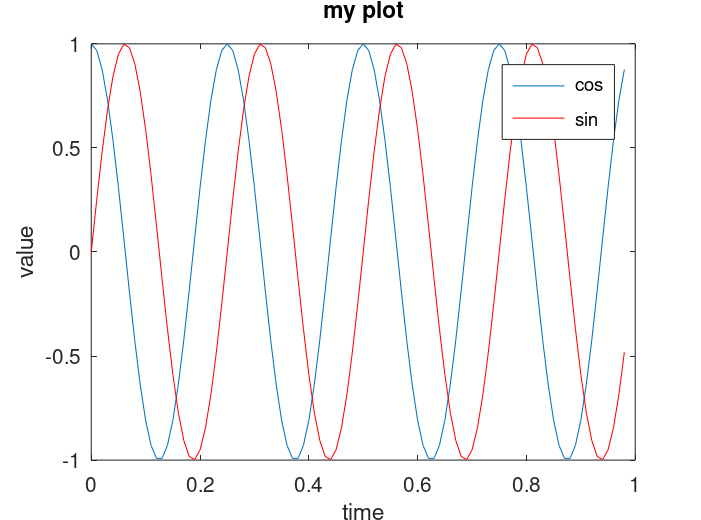</p>
<h2 id="控制语句：for-while-if">控制语句：for,while,if</h2>
<p>貌似空格和逗号分隔的语句就会打印变量内容；而冒号分隔则不会打印变量内容。</p>
<figure class="highlight python"><table><tr><td class="gutter"><pre><span class="line">1</span><br><span class="line">2</span><br><span class="line">3</span><br><span class="line">4</span><br><span class="line">5</span><br><span class="line">6</span><br><span class="line">7</span><br><span class="line">8</span><br><span class="line">9</span><br><span class="line">10</span><br><span class="line">11</span><br><span class="line">12</span><br><span class="line">13</span><br><span class="line">14</span><br><span class="line">15</span><br><span class="line">16</span><br><span class="line">17</span><br><span class="line">18</span><br><span class="line">19</span><br><span class="line">20</span><br><span class="line">21</span><br><span class="line">22</span><br><span class="line">23</span><br><span class="line">24</span><br><span class="line">25</span><br><span class="line">26</span><br><span class="line">27</span><br><span class="line">28</span><br><span class="line">29</span><br><span class="line">30</span><br><span class="line">31</span><br><span class="line">32</span><br><span class="line">33</span><br><span class="line">34</span><br><span class="line">35</span><br><span class="line">36</span><br><span class="line">37</span><br><span class="line">38</span><br><span class="line">39</span><br><span class="line">40</span><br><span class="line">41</span><br><span class="line">42</span><br><span class="line">43</span><br><span class="line">44</span><br><span class="line">45</span><br><span class="line">46</span><br><span class="line">47</span><br><span class="line">48</span><br><span class="line">49</span><br><span class="line">50</span><br><span class="line">51</span><br><span class="line">52</span><br><span class="line">53</span><br><span class="line">54</span><br><span class="line">55</span><br><span class="line">56</span><br><span class="line">57</span><br><span class="line">58</span><br><span class="line">59</span><br><span class="line">60</span><br><span class="line">61</span><br><span class="line">62</span><br><span class="line">63</span><br><span class="line">64</span><br><span class="line">65</span><br><span class="line">66</span><br><span class="line">67</span><br><span class="line">68</span><br><span class="line">69</span><br><span class="line">70</span><br><span class="line">71</span><br><span class="line">72</span><br><span class="line">73</span><br><span class="line">74</span><br><span class="line">75</span><br><span class="line">76</span><br><span class="line">77</span><br><span class="line">78</span><br><span class="line">79</span><br><span class="line">80</span><br><span class="line">81</span><br><span class="line">82</span><br><span class="line">83</span><br><span class="line">84</span><br><span class="line">85</span><br><span class="line">86</span><br><span class="line">87</span><br><span class="line">88</span><br><span class="line">89</span><br><span class="line">90</span><br><span class="line">91</span><br><span class="line">92</span><br><span class="line">93</span><br><span class="line">94</span><br><span class="line">95</span><br><span class="line">96</span><br><span class="line">97</span><br><span class="line">98</span><br><span class="line">99</span><br><span class="line">100</span><br><span class="line">101</span><br><span class="line">102</span><br><span class="line">103</span><br><span class="line">104</span><br><span class="line">105</span><br><span class="line">106</span><br><span class="line">107</span><br><span class="line">108</span><br><span class="line">109</span><br><span class="line">110</span><br><span class="line">111</span><br><span class="line">112</span><br><span class="line">113</span><br><span class="line">114</span><br><span class="line">115</span><br><span class="line">116</span><br><span class="line">117</span><br><span class="line">118</span><br><span class="line">119</span><br><span class="line">120</span><br><span class="line">121</span><br><span class="line">122</span><br><span class="line">123</span><br><span class="line">124</span><br><span class="line">125</span><br><span class="line">126</span><br><span class="line">127</span><br><span class="line">128</span><br><span class="line">129</span><br><span class="line">130</span><br><span class="line">131</span><br><span class="line">132</span><br><span class="line">133</span><br><span class="line">134</span><br><span class="line">135</span><br><span class="line">136</span><br><span class="line">137</span><br><span class="line">138</span><br><span class="line">139</span><br><span class="line">140</span><br><span class="line">141</span><br><span class="line">142</span><br><span class="line">143</span><br><span class="line">144</span><br><span class="line">145</span><br><span class="line">146</span><br><span class="line">147</span><br><span class="line">148</span><br><span class="line">149</span><br><span class="line">150</span><br><span class="line">151</span><br></pre></td><td class="code"><pre><span class="line">&gt;&gt; v = zeros(<span class="number">10</span>,<span class="number">1</span>)</span><br><span class="line">v =</span><br><span class="line"></span><br><span class="line">   <span class="number">0</span></span><br><span class="line">   <span class="number">0</span></span><br><span class="line">   <span class="number">0</span></span><br><span class="line">   <span class="number">0</span></span><br><span class="line">   <span class="number">0</span></span><br><span class="line">   <span class="number">0</span></span><br><span class="line">   <span class="number">0</span></span><br><span class="line">   <span class="number">0</span></span><br><span class="line">   <span class="number">0</span></span><br><span class="line">   <span class="number">0</span></span><br><span class="line"></span><br><span class="line">&gt;&gt; <span class="keyword">for</span> i=<span class="number">1</span>:<span class="number">10</span>,</span><br><span class="line">     v(i) = <span class="number">2</span>^i;</span><br><span class="line">   end;</span><br><span class="line">&gt;&gt; v</span><br><span class="line">v =</span><br><span class="line"></span><br><span class="line">      <span class="number">2</span></span><br><span class="line">      <span class="number">4</span></span><br><span class="line">      <span class="number">8</span></span><br><span class="line">     <span class="number">16</span></span><br><span class="line">     <span class="number">32</span></span><br><span class="line">     <span class="number">64</span></span><br><span class="line">    <span class="number">128</span></span><br><span class="line">    <span class="number">256</span></span><br><span class="line">    <span class="number">512</span></span><br><span class="line">   <span class="number">1024</span></span><br><span class="line"></span><br><span class="line">&gt;&gt; indices = <span class="number">1</span>:<span class="number">10</span></span><br><span class="line">indices =</span><br><span class="line"></span><br><span class="line">    <span class="number">1</span>    <span class="number">2</span>    <span class="number">3</span>    <span class="number">4</span>    <span class="number">5</span>    <span class="number">6</span>    <span class="number">7</span>    <span class="number">8</span>    <span class="number">9</span>   <span class="number">10</span></span><br><span class="line"></span><br><span class="line">&gt;&gt; <span class="keyword">for</span> i=indices,</span><br><span class="line">       disp(i);</span><br><span class="line">   end;</span><br><span class="line"><span class="number">1</span></span><br><span class="line"><span class="number">2</span></span><br><span class="line"><span class="number">3</span></span><br><span class="line"><span class="number">4</span></span><br><span class="line"><span class="number">5</span></span><br><span class="line"><span class="number">6</span></span><br><span class="line"><span class="number">7</span></span><br><span class="line"><span class="number">8</span></span><br><span class="line"><span class="number">9</span></span><br><span class="line"><span class="number">10</span></span><br><span class="line">&gt;&gt; i = <span class="number">1</span>;</span><br><span class="line">&gt;&gt; <span class="keyword">while</span> i &lt;= <span class="number">5</span>,</span><br><span class="line">      v(i) = <span class="number">100</span>;</span><br><span class="line"></span><br><span class="line">Display all 1765 possibilities? (y or n)</span><br><span class="line"></span><br><span class="line">&gt;&gt; <span class="keyword">while</span> i &lt;= <span class="number">5</span>,</span><br><span class="line">       v(i) = <span class="number">100</span>;</span><br><span class="line">       i = i+<span class="number">1</span>;</span><br><span class="line">   end;</span><br><span class="line">&gt;&gt; v</span><br><span class="line">v =</span><br><span class="line"></span><br><span class="line">    <span class="number">100</span></span><br><span class="line">    <span class="number">100</span></span><br><span class="line">    <span class="number">100</span></span><br><span class="line">    <span class="number">100</span></span><br><span class="line">    <span class="number">100</span></span><br><span class="line">     <span class="number">64</span></span><br><span class="line">    <span class="number">128</span></span><br><span class="line">    <span class="number">256</span></span><br><span class="line">    <span class="number">512</span></span><br><span class="line">   <span class="number">1024</span></span><br><span class="line"></span><br><span class="line">&gt;&gt; i = <span class="number">1</span>;</span><br><span class="line">&gt;&gt; <span class="keyword">while</span> true,</span><br><span class="line">      v(i) = <span class="number">999</span></span><br><span class="line">      i = i+<span class="number">1</span></span><br><span class="line">      <span class="keyword">if</span> i == <span class="number">6</span>,</span><br><span class="line">          <span class="keyword">break</span>;</span><br><span class="line">      end;</span><br><span class="line">   end;</span><br><span class="line">v =</span><br><span class="line"></span><br><span class="line">    <span class="number">999</span></span><br><span class="line">    <span class="number">100</span></span><br><span class="line">    <span class="number">100</span></span><br><span class="line">    <span class="number">100</span></span><br><span class="line">    <span class="number">100</span></span><br><span class="line">     <span class="number">64</span></span><br><span class="line">    <span class="number">128</span></span><br><span class="line">    <span class="number">256</span></span><br><span class="line">    <span class="number">512</span></span><br><span class="line">   <span class="number">1024</span></span><br><span class="line"></span><br><span class="line">i = <span class="number">2</span></span><br><span class="line">v =</span><br><span class="line"></span><br><span class="line">    <span class="number">999</span></span><br><span class="line">    <span class="number">999</span></span><br><span class="line">    <span class="number">100</span></span><br><span class="line">    <span class="number">100</span></span><br><span class="line">    <span class="number">100</span></span><br><span class="line">     <span class="number">64</span></span><br><span class="line">    <span class="number">128</span></span><br><span class="line">    <span class="number">256</span></span><br><span class="line">    <span class="number">512</span></span><br><span class="line">   <span class="number">1024</span></span><br><span class="line"></span><br><span class="line">i = <span class="number">3</span></span><br><span class="line">v =</span><br><span class="line"></span><br><span class="line">    <span class="number">999</span></span><br><span class="line">    <span class="number">999</span></span><br><span class="line">    <span class="number">999</span></span><br><span class="line">    <span class="number">100</span></span><br><span class="line">    <span class="number">100</span></span><br><span class="line">     <span class="number">64</span></span><br><span class="line">    <span class="number">128</span></span><br><span class="line">    <span class="number">256</span></span><br><span class="line">    <span class="number">512</span></span><br><span class="line">   <span class="number">1024</span></span><br><span class="line"></span><br><span class="line">i = <span class="number">4</span></span><br><span class="line">v =</span><br><span class="line"></span><br><span class="line">    <span class="number">999</span></span><br><span class="line">    <span class="number">999</span></span><br><span class="line">    <span class="number">999</span></span><br><span class="line">    <span class="number">999</span></span><br><span class="line">    <span class="number">100</span></span><br><span class="line">     <span class="number">64</span></span><br><span class="line">    <span class="number">128</span></span><br><span class="line">    <span class="number">256</span></span><br><span class="line">    <span class="number">512</span></span><br><span class="line">   <span class="number">1024</span></span><br><span class="line"></span><br><span class="line">i = <span class="number">5</span></span><br><span class="line">v =</span><br><span class="line"></span><br><span class="line">    <span class="number">999</span></span><br><span class="line">    <span class="number">999</span></span><br><span class="line">    <span class="number">999</span></span><br><span class="line">    <span class="number">999</span></span><br><span class="line">    <span class="number">999</span></span><br><span class="line">     <span class="number">64</span></span><br><span class="line">    <span class="number">128</span></span><br><span class="line">    <span class="number">256</span></span><br><span class="line">    <span class="number">512</span></span><br><span class="line">   <span class="number">1024</span></span><br><span class="line"></span><br><span class="line">i = <span class="number">6</span></span><br></pre></td></tr></table></figure>
<p>可以用 <code>addpath()</code> 添加环境变量。</p>
<figure class="highlight plain"><table><tr><td class="gutter"><pre><span class="line">1</span><br><span class="line">2</span><br><span class="line">3</span><br><span class="line">4</span><br><span class="line">5</span><br><span class="line">6</span><br><span class="line">7</span><br><span class="line">8</span><br><span class="line">9</span><br><span class="line">10</span><br><span class="line">11</span><br><span class="line">12</span><br><span class="line">13</span><br><span class="line">14</span><br><span class="line">15</span><br><span class="line">16</span><br><span class="line">17</span><br><span class="line">18</span><br><span class="line">19</span><br><span class="line">20</span><br><span class="line">21</span><br><span class="line">22</span><br><span class="line">23</span><br><span class="line">24</span><br><span class="line">25</span><br><span class="line">26</span><br><span class="line">27</span><br><span class="line">28</span><br><span class="line">29</span><br><span class="line">30</span><br><span class="line">31</span><br><span class="line">32</span><br><span class="line">33</span><br><span class="line">34</span><br><span class="line">35</span><br><span class="line">36</span><br><span class="line">37</span><br></pre></td><td class="code"><pre><span class="line">&gt;&gt; v</span><br><span class="line">v &#x3D;</span><br><span class="line"></span><br><span class="line">    999</span><br><span class="line">    999</span><br><span class="line">    999</span><br><span class="line">    999</span><br><span class="line">    999</span><br><span class="line">    999</span><br><span class="line">    128</span><br><span class="line">    256</span><br><span class="line">    512</span><br><span class="line">   1024</span><br><span class="line"></span><br><span class="line">&gt;&gt; v(1) &#x3D; 2</span><br><span class="line">v &#x3D;</span><br><span class="line"></span><br><span class="line">      2</span><br><span class="line">    999</span><br><span class="line">    999</span><br><span class="line">    999</span><br><span class="line">    999</span><br><span class="line">    999</span><br><span class="line">    128</span><br><span class="line">    256</span><br><span class="line">    512</span><br><span class="line">   1024</span><br><span class="line"></span><br><span class="line">&gt;&gt; if v(1)&#x3D;&#x3D;1,</span><br><span class="line">      disp(&#39;The value is one&#39;);</span><br><span class="line">   elseif v(1) &#x3D;&#x3D; 2,</span><br><span class="line">      disp(&#39;The value is two&#39;);</span><br><span class="line">   else</span><br><span class="line">      disp(&#39;The value is not one or two.&#39;);</span><br><span class="line">   end;</span><br><span class="line">The value is two</span><br><span class="line">&gt;&gt; addpath(&#39;D:\Desktop&#39;)</span><br></pre></td></tr></table></figure>
<h2 id="函数">函数</h2>
<h3 id="计算线性回归的损失函数">计算线性回归的损失函数</h3>
<p>这里我还是用了我最熟悉的Python Numpy 。根据前面几节课，我感觉 Octave 在矩阵运算上很简洁，画图也很方便，但是和 Python 没有拉开特别大的差距，所以还是用 Python 吧。</p>
<p>首先，定义设计矩阵 X, 反应变量 y ，回归参数 theta</p>
<figure class="highlight python"><table><tr><td class="gutter"><pre><span class="line">1</span><br><span class="line">2</span><br><span class="line">3</span><br><span class="line">4</span><br><span class="line">5</span><br><span class="line">6</span><br><span class="line">7</span><br><span class="line">8</span><br><span class="line">9</span><br><span class="line">10</span><br><span class="line">11</span><br><span class="line">12</span><br><span class="line">13</span><br><span class="line">14</span><br></pre></td><td class="code"><pre><span class="line">In [<span class="number">1</span>]: <span class="keyword">import</span> numpy <span class="keyword">as</span> np</span><br><span class="line"></span><br><span class="line">In [<span class="number">2</span>]: X = np.array([[<span class="number">1</span>,<span class="number">1</span>],[<span class="number">1</span>,<span class="number">2</span>],[<span class="number">1</span>,<span class="number">3</span>]])</span><br><span class="line"></span><br><span class="line">In [<span class="number">3</span>]: X.shape</span><br><span class="line">Out[<span class="number">3</span>]: (<span class="number">3</span>, <span class="number">2</span>)</span><br><span class="line"></span><br><span class="line">In [<span class="number">4</span>]: y = np.array([<span class="number">1</span>,<span class="number">2</span>,<span class="number">3</span>])</span><br><span class="line"></span><br><span class="line">In [<span class="number">5</span>]: y</span><br><span class="line">Out[<span class="number">5</span>]: array([<span class="number">1</span>, <span class="number">2</span>, <span class="number">3</span>])</span><br><span class="line"></span><br><span class="line">In [<span class="number">6</span>]: theta = np.array([<span class="number">0</span>,<span class="number">1</span>])</span><br><span class="line"></span><br></pre></td></tr></table></figure>
<p>定义函数</p>
<figure class="highlight python"><table><tr><td class="gutter"><pre><span class="line">1</span><br><span class="line">2</span><br><span class="line">3</span><br><span class="line">4</span><br><span class="line">5</span><br><span class="line">6</span><br><span class="line">7</span><br><span class="line">8</span><br><span class="line">9</span><br><span class="line">10</span><br></pre></td><td class="code"><pre><span class="line"><span class="function"><span class="keyword">def</span> <span class="title">CostFunctionJ</span>(<span class="params">X, y, theta</span>):</span></span><br><span class="line">    <span class="comment"># 计算线性回归的代价函数</span></span><br><span class="line">    <span class="comment"># X 是设计矩阵，y 为真实结果，theta 为线性回归的参数</span></span><br><span class="line">    <span class="keyword">import</span> numpy <span class="keyword">as</span> np</span><br><span class="line">    m = X.shape[<span class="number">0</span>] <span class="comment"># 样本数</span></span><br><span class="line">    predictions = np.dot(X,theta) <span class="comment"># 预测值，等于 X*θ</span></span><br><span class="line">    sqrErrors = np.square(predictions - y) <span class="comment"># 平方误差, 求平方只能用 np.square()</span></span><br><span class="line">    J = <span class="number">1</span>/(2m)*<span class="built_in">sum</span>(sqrErrors)</span><br><span class="line">    <span class="keyword">return</span>(J)</span><br><span class="line"></span><br></pre></td></tr></table></figure>
<p>计算代价函数，这里由于是完全拟合，因此代价函数的结果为0。</p>
<figure class="highlight python"><table><tr><td class="gutter"><pre><span class="line">1</span><br><span class="line">2</span><br><span class="line">3</span><br><span class="line">4</span><br><span class="line">5</span><br><span class="line">6</span><br><span class="line">7</span><br><span class="line">8</span><br><span class="line">9</span><br><span class="line">10</span><br><span class="line">11</span><br><span class="line">12</span><br><span class="line">13</span><br><span class="line">14</span><br><span class="line">15</span><br><span class="line">16</span><br><span class="line">17</span><br><span class="line">18</span><br></pre></td><td class="code"><pre><span class="line">In [<span class="number">32</span>]: %paste</span><br><span class="line"><span class="function"><span class="keyword">def</span> <span class="title">CostFunctionJ</span>(<span class="params">X, y, theta</span>):</span></span><br><span class="line">    <span class="comment"># 计算线性回归的代价函数</span></span><br><span class="line">    <span class="comment"># X 是设计矩阵，y 为真实结果，theta 为线性回归的参数</span></span><br><span class="line">    <span class="keyword">import</span> numpy <span class="keyword">as</span> np</span><br><span class="line">    m = X.shape[<span class="number">0</span>] <span class="comment"># 样本数</span></span><br><span class="line">    predictions = np.dot(X,theta) <span class="comment"># 预测值，等于 X*θ</span></span><br><span class="line">    sqrErrors = np.square(predictions - y) <span class="comment"># 平方误差, 求平方只能用 np.square()</span></span><br><span class="line">    J = <span class="number">1</span>/(<span class="number">2</span>*m)*<span class="built_in">sum</span>(sqrErrors)</span><br><span class="line">    <span class="keyword">return</span>(J)</span><br><span class="line"></span><br><span class="line"><span class="comment">## -- End pasted text --</span></span><br><span class="line"></span><br><span class="line">In [<span class="number">33</span>]: j =  CostFunctionJ(X, y, theta)</span><br><span class="line"></span><br><span class="line">In [<span class="number">34</span>]: j</span><br><span class="line">Out[<span class="number">34</span>]: <span class="number">0.0</span></span><br><span class="line"></span><br></pre></td></tr></table></figure>
<p>改变一下参数</p>
<figure class="highlight python"><table><tr><td class="gutter"><pre><span class="line">1</span><br><span class="line">2</span><br><span class="line">3</span><br><span class="line">4</span><br><span class="line">5</span><br></pre></td><td class="code"><pre><span class="line">In [<span class="number">35</span>]: theta = [<span class="number">0</span>,<span class="number">0</span>]</span><br><span class="line"></span><br><span class="line">In [<span class="number">36</span>]: CostFunctionJ(X, y, theta)</span><br><span class="line">Out[<span class="number">36</span>]: <span class="number">2.333333333333333</span></span><br><span class="line"></span><br></pre></td></tr></table></figure>
<h2 id="矢量化">矢量化</h2>
<p>比如线性回归的梯度下降，可以写成矢量的形式，而不需要使用 for 循环。</p>
<p>首先，这里将梯度下降的右边拆成了三部分，第一部分是 θ（n+1维的向量），第二部分为 α （实数），第三部分称为 δ （n+1维的向量）。</p>
<p>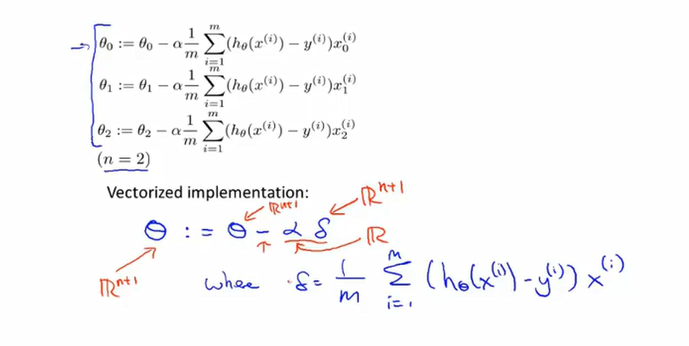</p>
<p>为什么 δ 是n+1维的向量呢？下一步继续拆分，这一部分有一点难理解，我在纸上画了一下才懂，估计之后还是会忘 。</p>
<p>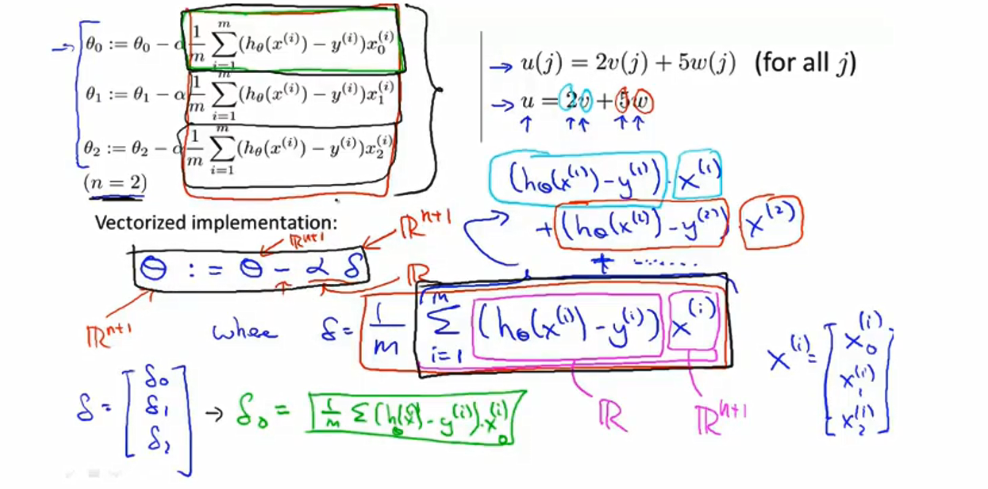</p>
<h1>7 logistic 回归</h1>
<h2 id="线性回归用在二分类问题的弊端">线性回归用在二分类问题的弊端</h2>
<ol>
<li>容易受到极端的点的影响</li>
<li>预测值超出[0,1]范围，不好解释</li>
</ol>
<p>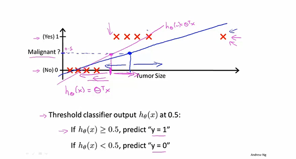</p>
<h2 id="假设陈述">假设陈述</h2>
<p>逻辑回归预测值的 含义</p>
<p>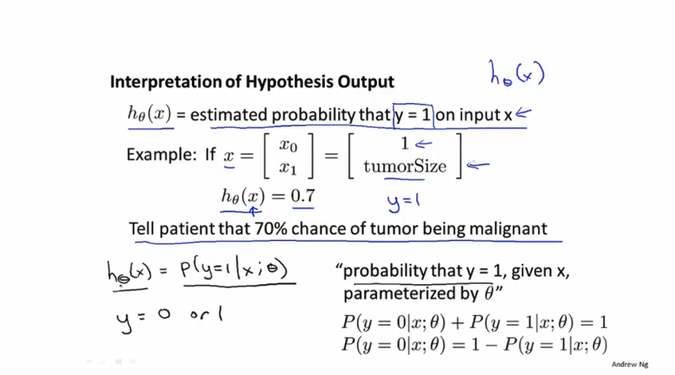</p>
<h2 id="决策界限">决策界限</h2>
<p>如果 <strong>θ<sup>T</sup>x  大于等于0，那么就判定 y = 1</strong>，反之判定为 0。</p>
<p>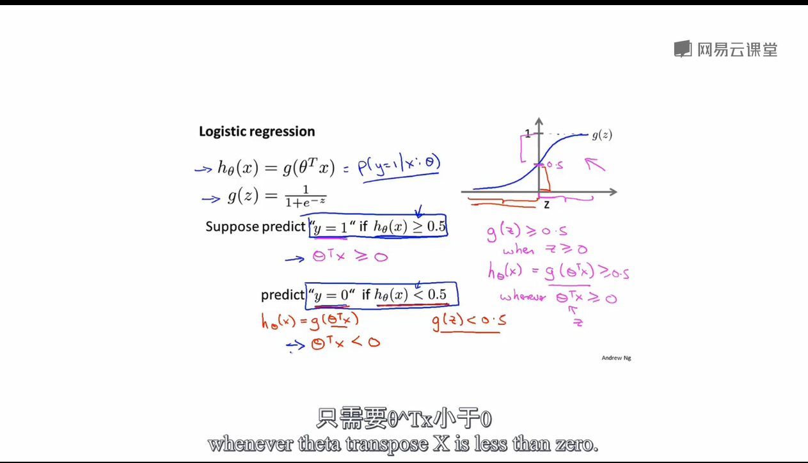</p>
<p>因此，逻辑回归的决策界限(<strong>decision boundary</strong>)是<strong>线性</strong>的，举个例子如下</p>
<p>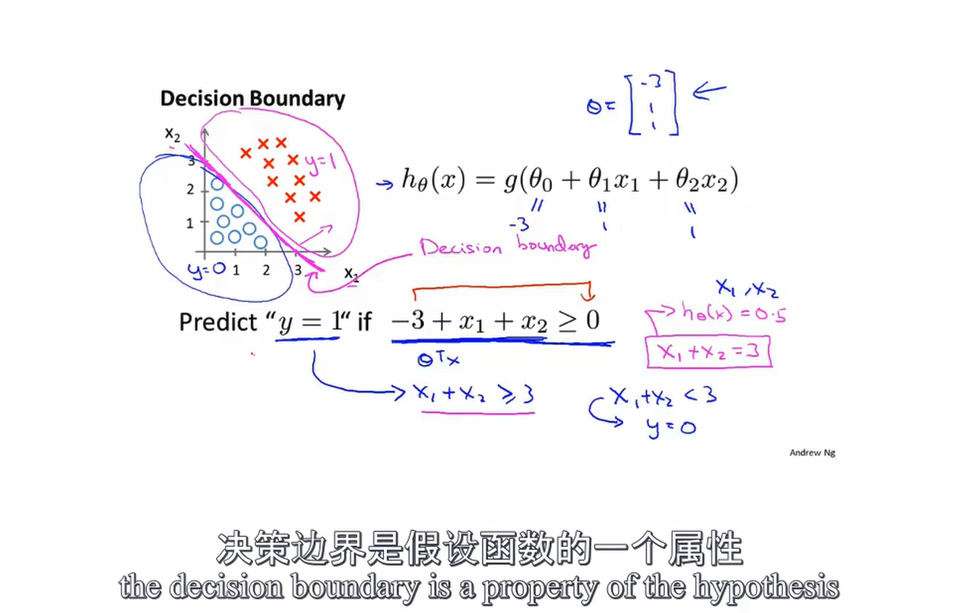</p>
<p>对于非线性的决策界限，你可以像线性回归一样添加多项式，如下</p>
<p>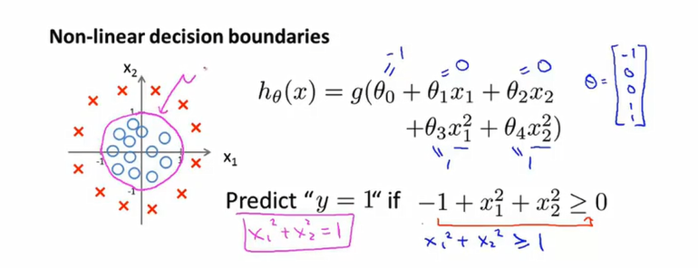</p>
<h2 id="代价函数">代价函数</h2>
<p>如果你将线性回归的代价函数代入到逻辑回归，你会发现此时的代价函数是一个<strong>非凸函数</strong>，如下面左图。我们期望的一个代价函数应该是一个凸函数，如右图。</p>
<p>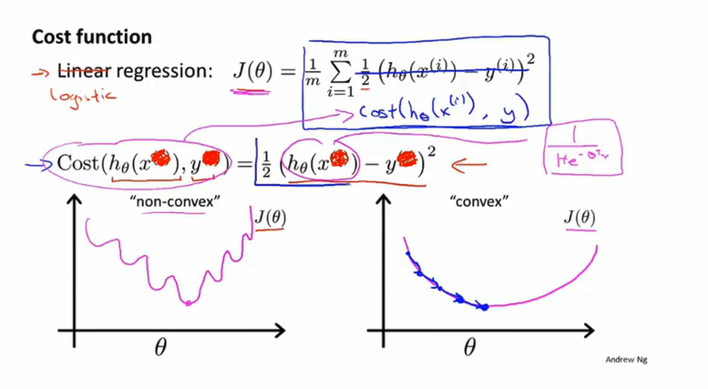</p>
<p>实际使用的cost function 如下：先看 y =1 时（y=0同理）</p>
<p>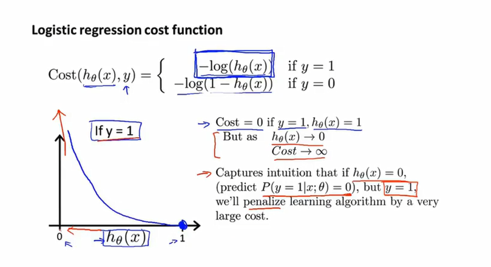</p>
<h2 id="简化代价函数与梯度下降">简化代价函数与梯度下降</h2>
<p>由于 y 只能是0或1，因此我们可以将代价函数的两个式子合成一个</p>
<p>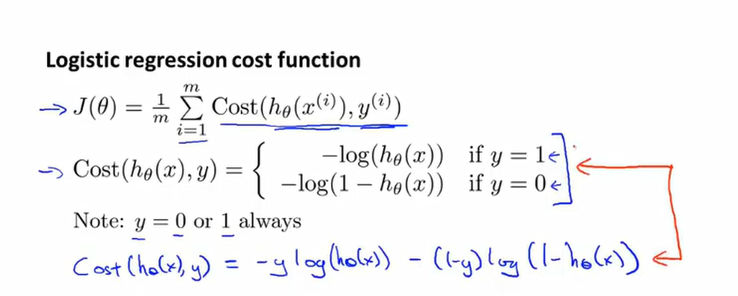</p>
<p>因此，总的代价函数为</p>
<p>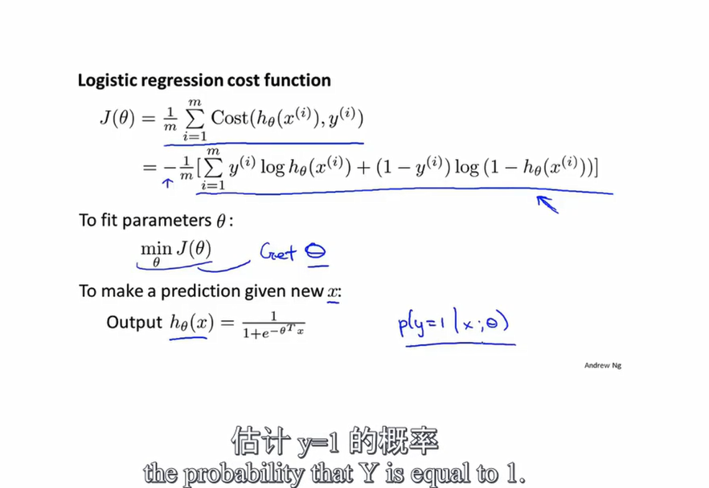</p>
<p>我们同样可以使用梯度下降来求参数</p>
<p>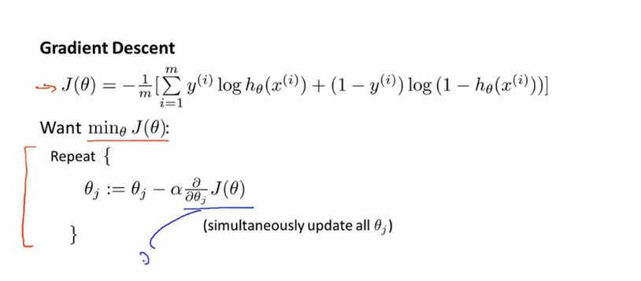</p>
<p>经过求偏导，简化得到下面式子（我证明出来啦），ppt 给出的公式应该是少了 1/m 。这里得到的<strong>梯度下降的式子和线性回归中的式子一模一样</strong>。</p>
<p>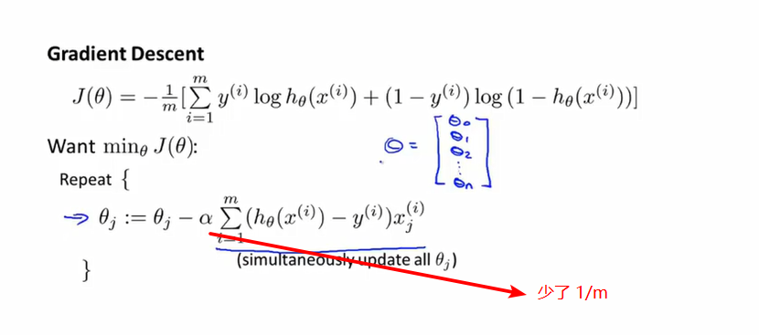</p>
<p>逻辑回归的梯度下降同样需要<strong>特征缩放</strong>，以加快计算速度。</p>
<h3 id="逻辑回归代价函数证明-最大似然法">逻辑回归代价函数证明-最大似然法</h3>
<p>根据最大似然法，可以得到逻辑回归的代价函数，这个来自于李宏毅老师的视频。</p>
<p>这个证明过程也很简单，这一页有个文本错误，y_hat<sup>2</sup>  应该为1，而 y_hat<sup>3</sup>  应该为0 。另外我觉得这里y   不应该加<code>hat</code> ，因为这个y是真实的标签，而不是预测值。</p>
<p>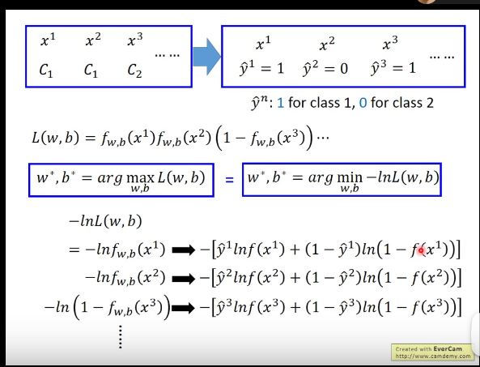</p>
<h2 id="高级优化">高级优化</h2>
<p>除了梯度下降，还有共轭梯度等方法进行参数估计，这些方法的优缺点如下：</p>
<p>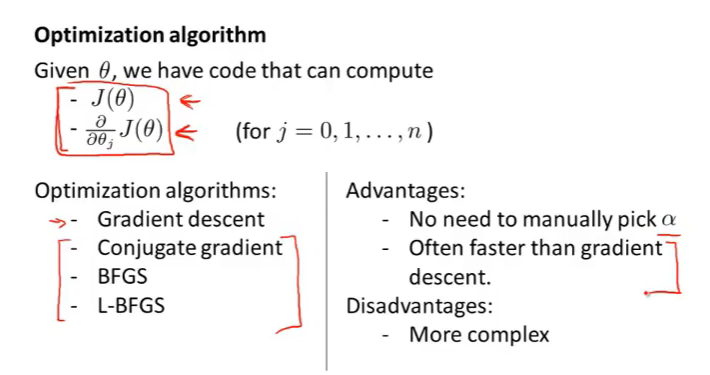</p>
<h2 id="多元分类：one-vs-all">多元分类：one-vs-all</h2>
<p>具有多个分类的分类问题，这里介绍一种算法“一对多” (One-vs-all or one-vs-rest)。</p>
<p>比如三种分类的问题，剖分成<strong>三个二分类问题</strong>，这样就可以继续使用逻辑回归了。</p>
<p>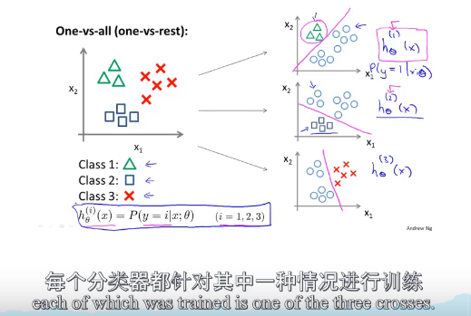</p>
<p>最后，为了预测一个新的输入 x 的结果，我们将其代入到这3个分类器中，选择概率最高的那个分类。</p>
<h1>8 正则化</h1>
<h2 id="过拟合问题">过拟合问题</h2>
<p>当你有很多变量时，你无法通过可视化的方法来发现过拟合问题。为了避免或解决过拟合的问题，可用的方法包括：</p>
<ol>
<li>
<p>较少特征数量</p>
<p>手动选择、算法选择</p>
</li>
<li>
<p>正则化 (Regularization)</p>
<ul>
<li>
<p>保留所有的变量，但是减小参数的值</p>
</li>
<li>
<p>当特征数量很多时效果很好，每个特征对于预测均有贡献。</p>
</li>
</ul>
</li>
</ol>
<h2 id="代价函数-2">代价函数</h2>
<p>正则化的代价函数多增加了一项。</p>
<p>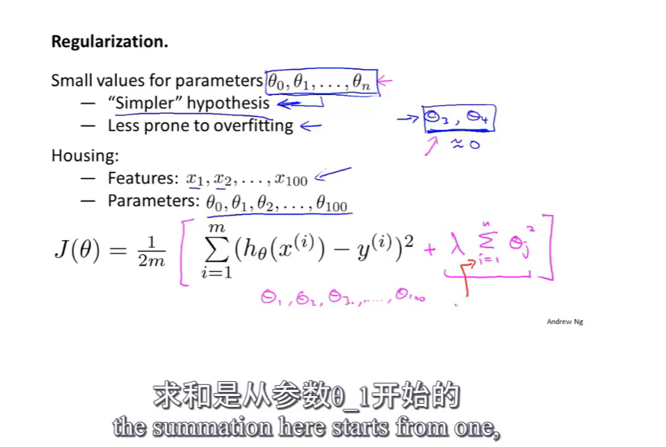</p>
<h2 id="线性回归的正则化">线性回归的正则化</h2>
<p>正则化之后的梯度回归如下图，θ<sub>0</sub> 不变，其他相当于第一项乘以了一个略小于1的数，例如0.99。</p>
<p>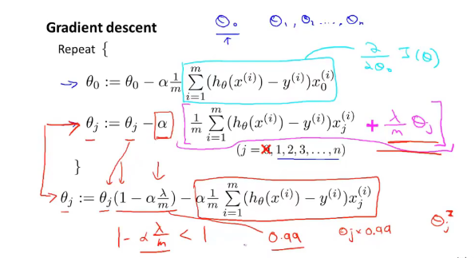</p>
<p>此时的正规方程求解如下</p>
<p>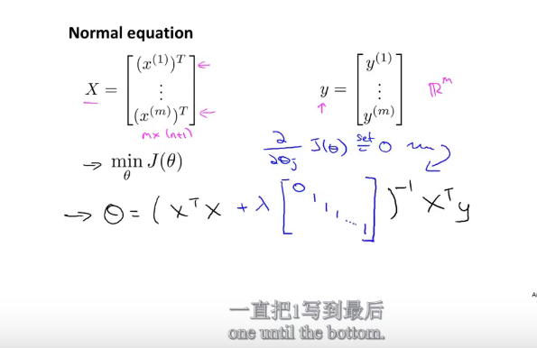</p>
<p>正规方程的不可逆问题，如果<strong>样本数目远小于特征数目</strong>，那么此时 (X<sup>T</sup>X) 不可逆，但是如果使用正则化，那么此时得到的需要求逆的矩阵就一定是可逆的。</p>
<p>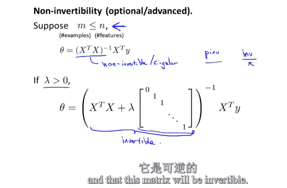</p>
<h2 id="逻辑回归的正则化">逻辑回归的正则化</h2>
<p>类似于线性回归，损失函数同样添加相同的惩罚项，梯度下降的式子看上去也和线性回归一样。</p>
<h1>9 神经网络学习</h1>
<h2 id="非线性假设">非线性假设</h2>
<p>如果特折数目过多，往线性方法里添加多项式并不现实，因为太多了。比如二次项的数目是 n(n-1)/2 项。</p>
<p>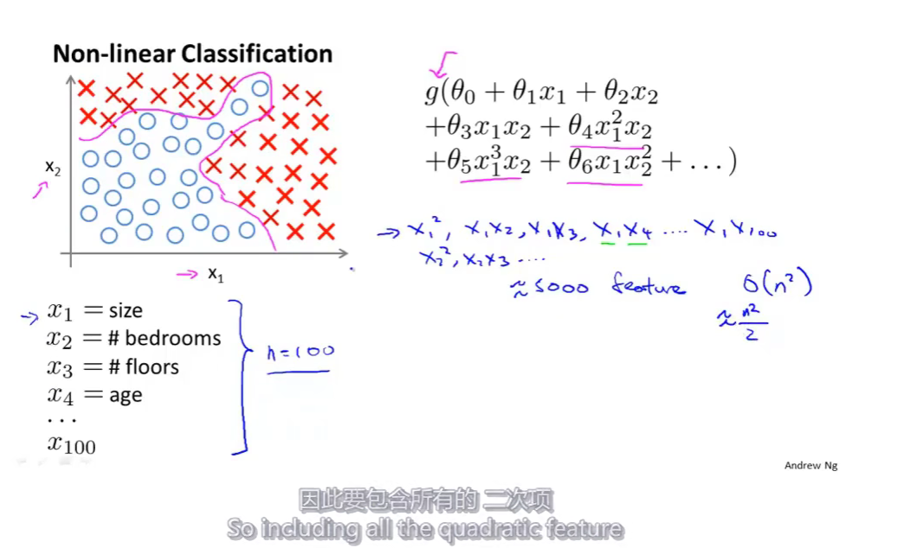</p>
<h2 id="神经元与大脑">神经元与大脑</h2>
<p>大脑有可能是采用一种学习算法来处理不同的数据。</p>
<h2 id="模型展示Ⅰ">模型展示Ⅰ</h2>
<p>这里的 <code>activation function</code> 就是指非线性函数，是神经网络中的术语。参数 θ 在神经网络中称为“权重”(<strong>weights</strong>)</p>
<p>下图为单个神经元。</p>
<p>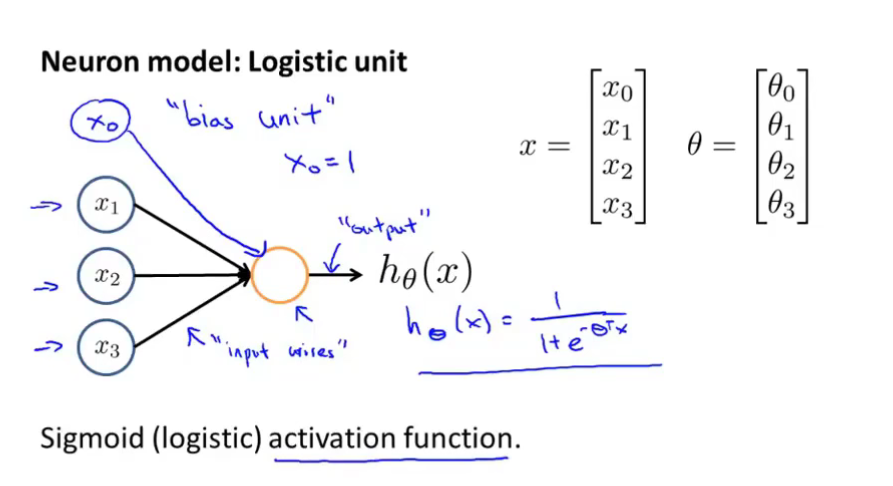</p>
<p>神经网络是一组神经元连接在一起的集合。第一层一般称为 <code>input layer</code>，中间层称为<code>hidden layer</code>，最后一层称为<code>output layer</code> 。</p>
<p>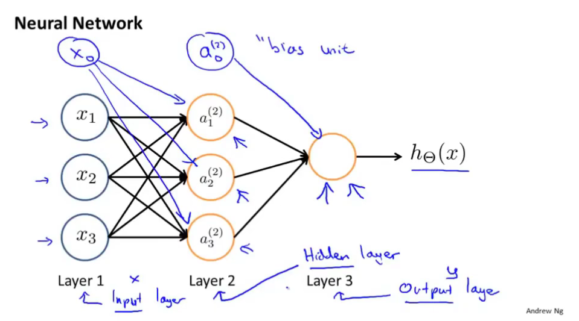</p>
<p>具体展开如下：这里的 <code>g()</code> 就是 <code>sigmod</code> 函数</p>
<p>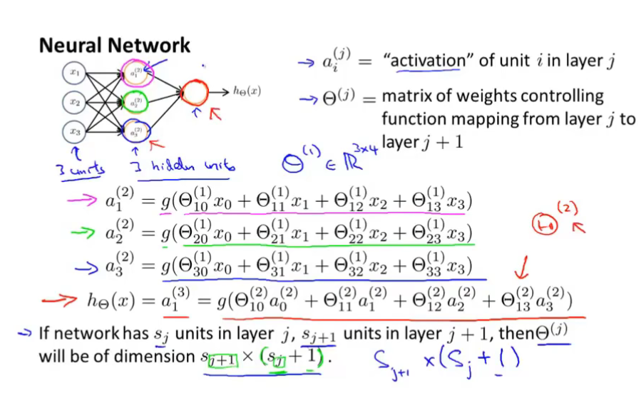</p>
<h2 id="模型展示Ⅱ">模型展示Ⅱ</h2>
<p>将神经网络的模型进行<strong>向量化</strong>，这种算法又称为 <code>Forward propagation</code>(向前传播) ，因为这是从第一层到第二层等，一直到最后一层。</p>
<p>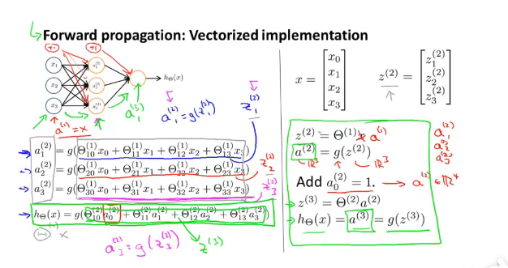</p>
<p>如果我们只看最后一层，我们就会发现这里就是一个<strong>逻辑回归</strong>。</p>
<p>神经网络的<strong>架构(architecture)</strong>：不同神经元的连接方式，比如下面就是一种新的架构。</p>
<p>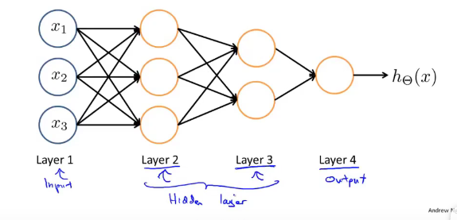</p>
<h2 id="例子与直觉理解Ⅰ">例子与直觉理解Ⅰ</h2>
<p>假设我们有两个二进制的输入变量 x<sub>1</sub>, x<sub>2</sub> ，这两个变量只能取值0或1。y 分为两类，x<sub>1</sub> 异或 x<sub>2</sub> (x<sub>1</sub> XOR x<sub>2</sub>) 和 其他 (x<sub>1</sub> NXOR x<sub>2</sub>,  等于 NOT (x<sub>1</sub> XOR x<sub>2</sub>))。</p>
<p>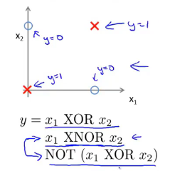</p>
<p>那么我们能不能构建一个神经网络来判定这个分类问题呢？</p>
<p>先看一个简单的 AND 神经元，下面这个神经元的作用相当于一个逻辑与的操作。</p>
<p>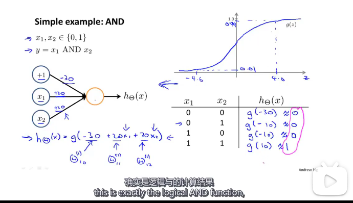</p>
<p>再看一个逻辑 OR 功能的神经元</p>
<p>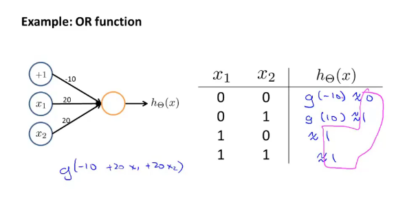</p>
<h2 id="例子与直觉理解Ⅱ">例子与直觉理解Ⅱ</h2>
<p>再看一个 NOT 功能的神经元</p>
<p>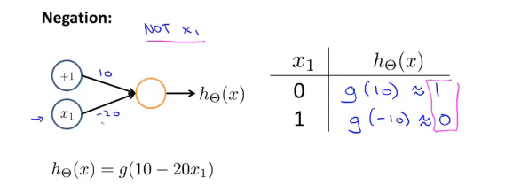</p>
<p>将上面的这些组合到一起，生成  x<sub>1</sub> XNOR x<sub>2</sub></p>
<p>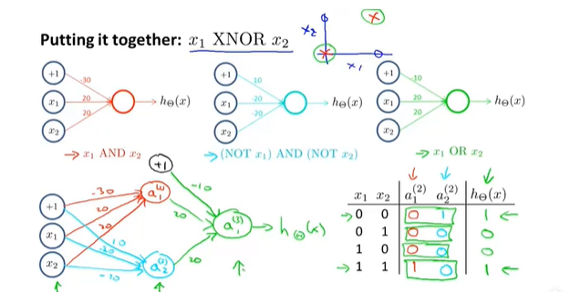</p>
<h2 id="多元分类">多元分类</h2>
<p>要在神经网络中实现多元分类，采用的方法本质上是一种<strong>一对多法</strong>的拓展，这里我们建立一个多个输出值的输出形式，每个输出值表示对一个分类的预测结果，如下图。</p>
<p>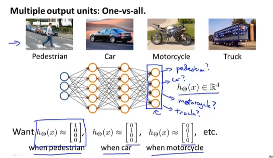</p>
<h2 id=""></h2>
<p>重新排布一下</p>
<p>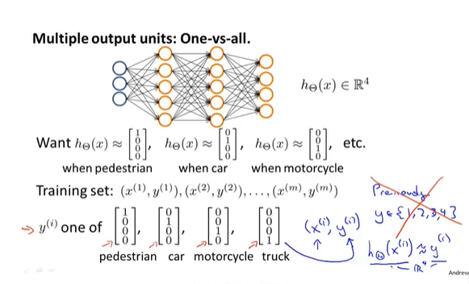</p>
<h1>10 神经网络参数的反向传播算法</h1>
<h2 id="代价函数-3">代价函数</h2>
<p>一些基本定义</p>
<p>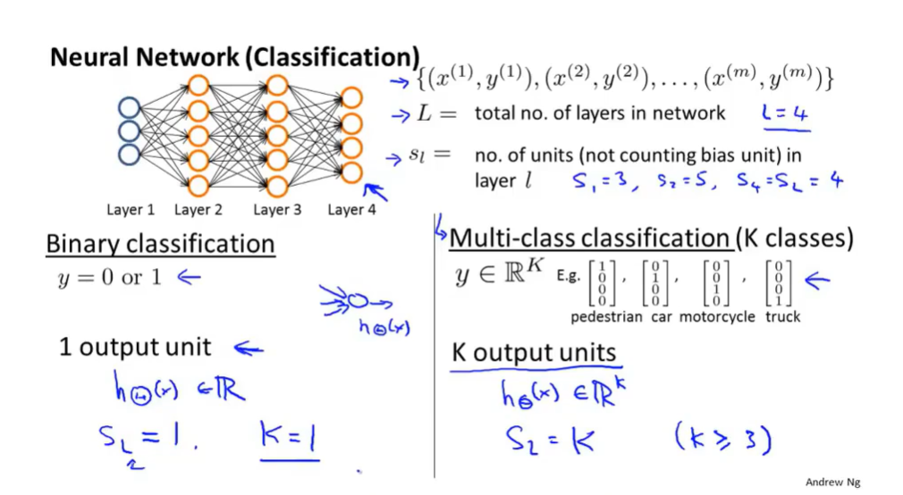</p>
<p>现在我们为神经网络定义损失函数。首先我们看逻辑回归的一般模式（加上正则化）：</p>
<p style=""></p><p>对于神经网络，会是这个式子的一般化，式子如下。这里的第二项看上去复杂，其实就和逻辑回归一样，是所有参数的平方和（不包括 bias）。</p>
<p>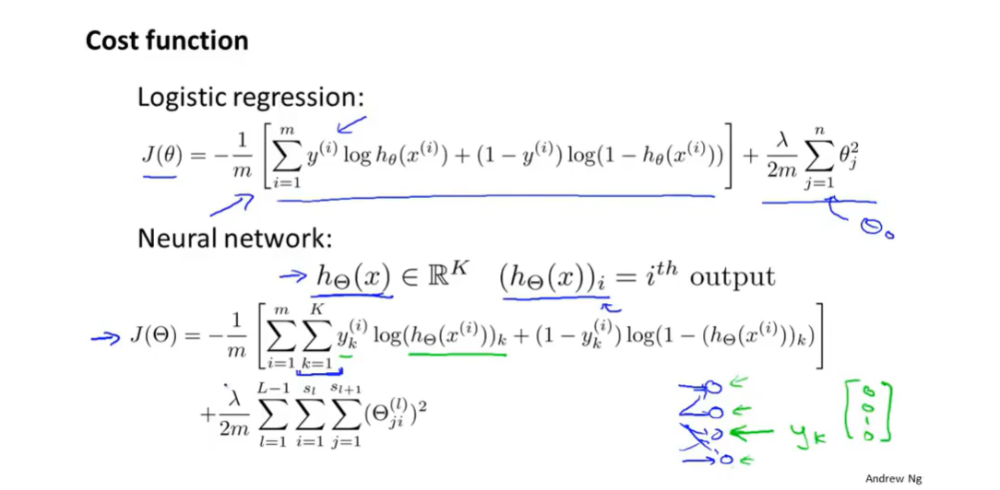</p>
<h2 id="反向传播算法">反向传播算法</h2>
<p>上面已经定义了损失函数，我们现在需要找到使得这个损失函数最小的一组参数。如果使用梯度下降等方法，我们就需要计算每一步的损失函数和偏导数。</p>
<p>假设我们的训练集只有一个样本 (x, y) ，首先我们看向前传播过程如下</p>
<p>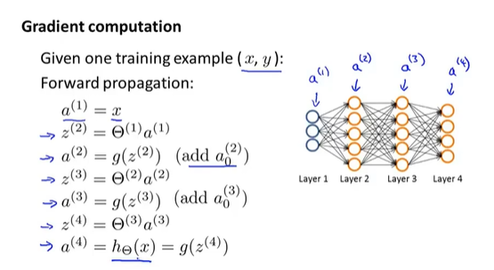</p>
<p>为了计算导数项，这里我们采用一种称为反向传播 (Backpropagation) 的算法。</p>
<p>这里我们定义 δ 为某个结点的 “error” ，这里第一层是不计算 δ 的，因为第一层是输入的特征，我们认为是没有误差的。</p>
<p>通过这些 δ 值，我们可以很快地计算偏导数（下图红框，缺证明，单纯记公式），这里的偏导数忽视了正则项。</p>
<p>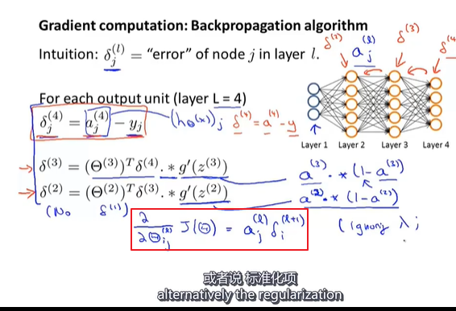</p>
<p>整理一下整个过程，有点懵逼了。而且求偏导数，含有正则项的那个式子，应该是少了 1/m 吧。</p>
<p>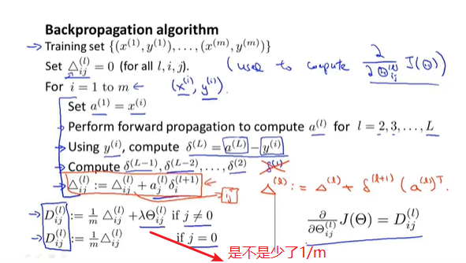</p>
<h2 id="理解反向传播">理解反向传播</h2>
<p>假设只有一个输出值（二分类），并且训练集只有一个样本，忽视正则项。为了理解，你可以把此时的损失函数视为某种残差方差函数 (疑问？)</p>
<p>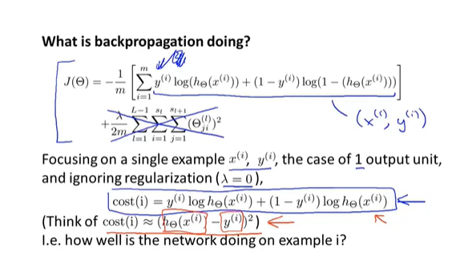</p>
<p>现在再看反向传播的过程，这些 δ 项可以视为激活项的误差。正式地说，δ 项是代价函数关于 z 的偏导数（没听懂）。</p>
<p>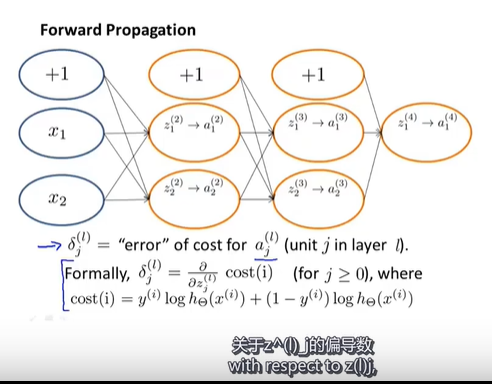</p>
<p>这里举了个例子，计算 δ<sup>(2)</sup><sub>2</sub>  项，见下图红框。有个疑问，这里没有点乘 g’(z) 。</p>
<p>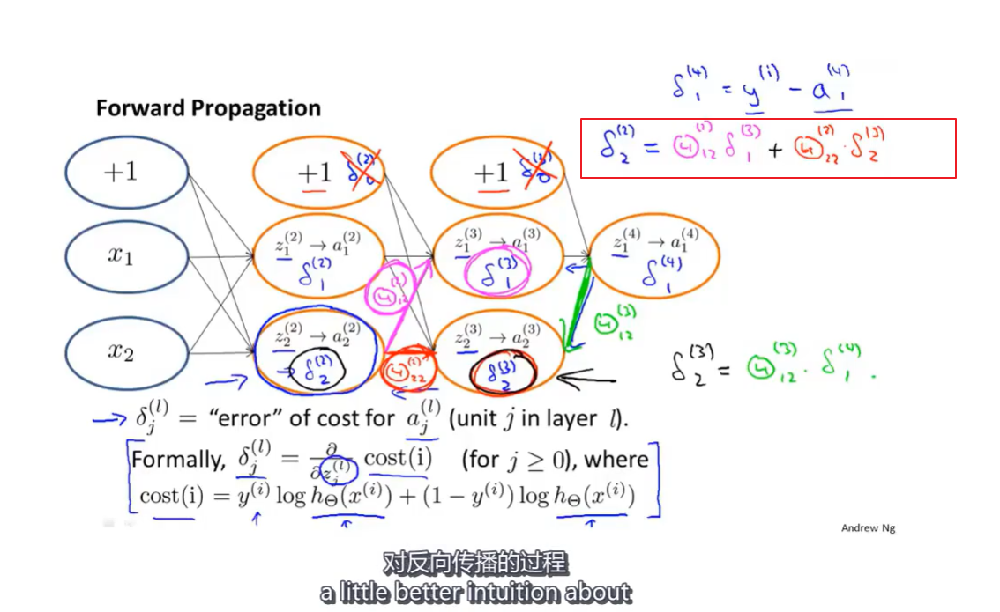</p>
<h2 id="使用注意：展开参数">使用注意：展开参数</h2>
<p>神经网络的参数是一个矩阵，但是 octave 使用的参数是一个向量，因此 <strong>需要将矩阵转为向量</strong>（梯度同理）。</p>
<p>举个例子，下图的神经网络共三层，第一层和第二层均是 10 个单元，第三层是一个单元。因此 Θ<sup>(1)</sup> 是一个 10×11 的矩阵。在 octave 中，将所有参数转为一个向量的方式如下：</p>
<p></p>
<p>在octave 的代码展示如下：</p>
<figure class="highlight plain"><table><tr><td class="gutter"><pre><span class="line">1</span><br><span class="line">2</span><br><span class="line">3</span><br><span class="line">4</span><br><span class="line">5</span><br><span class="line">6</span><br><span class="line">7</span><br><span class="line">8</span><br><span class="line">9</span><br><span class="line">10</span><br><span class="line">11</span><br><span class="line">12</span><br><span class="line">13</span><br><span class="line">14</span><br><span class="line">15</span><br><span class="line">16</span><br><span class="line">17</span><br><span class="line">18</span><br><span class="line">19</span><br><span class="line">20</span><br><span class="line">21</span><br><span class="line">22</span><br><span class="line">23</span><br><span class="line">24</span><br><span class="line">25</span><br><span class="line">26</span><br><span class="line">27</span><br><span class="line">28</span><br><span class="line">29</span><br><span class="line">30</span><br><span class="line">31</span><br><span class="line">32</span><br><span class="line">33</span><br><span class="line">34</span><br><span class="line">35</span><br><span class="line">36</span><br><span class="line">37</span><br><span class="line">38</span><br><span class="line">39</span><br><span class="line">40</span><br><span class="line">41</span><br><span class="line">42</span><br><span class="line">43</span><br><span class="line">44</span><br><span class="line">45</span><br><span class="line">46</span><br><span class="line">47</span><br><span class="line">48</span><br><span class="line">49</span><br><span class="line">50</span><br><span class="line">51</span><br><span class="line">52</span><br><span class="line">53</span><br><span class="line">54</span><br><span class="line">55</span><br><span class="line">56</span><br><span class="line">57</span><br><span class="line">58</span><br><span class="line">59</span><br><span class="line">60</span><br><span class="line">61</span><br><span class="line">62</span><br><span class="line">63</span><br><span class="line">64</span><br><span class="line">65</span><br><span class="line">66</span><br><span class="line">67</span><br><span class="line">68</span><br><span class="line">69</span><br><span class="line">70</span><br><span class="line">71</span><br></pre></td><td class="code"><pre><span class="line">&gt;&gt; Theta1 &#x3D; ones(10,11)</span><br><span class="line">Theta1 &#x3D;</span><br><span class="line"></span><br><span class="line">   1   1   1   1   1   1   1   1   1   1   1</span><br><span class="line">   1   1   1   1   1   1   1   1   1   1   1</span><br><span class="line">   1   1   1   1   1   1   1   1   1   1   1</span><br><span class="line">   1   1   1   1   1   1   1   1   1   1   1</span><br><span class="line">   1   1   1   1   1   1   1   1   1   1   1</span><br><span class="line">   1   1   1   1   1   1   1   1   1   1   1</span><br><span class="line">   1   1   1   1   1   1   1   1   1   1   1</span><br><span class="line">   1   1   1   1   1   1   1   1   1   1   1</span><br><span class="line">   1   1   1   1   1   1   1   1   1   1   1</span><br><span class="line">   1   1   1   1   1   1   1   1   1   1   1</span><br><span class="line"></span><br><span class="line">&gt;&gt; Theta2 &#x3D; 2*ones(10,11)</span><br><span class="line">Theta2 &#x3D;</span><br><span class="line"></span><br><span class="line">   2   2   2   2   2   2   2   2   2   2   2</span><br><span class="line">   2   2   2   2   2   2   2   2   2   2   2</span><br><span class="line">   2   2   2   2   2   2   2   2   2   2   2</span><br><span class="line">   2   2   2   2   2   2   2   2   2   2   2</span><br><span class="line">   2   2   2   2   2   2   2   2   2   2   2</span><br><span class="line">   2   2   2   2   2   2   2   2   2   2   2</span><br><span class="line">   2   2   2   2   2   2   2   2   2   2   2</span><br><span class="line">   2   2   2   2   2   2   2   2   2   2   2</span><br><span class="line">   2   2   2   2   2   2   2   2   2   2   2</span><br><span class="line">   2   2   2   2   2   2   2   2   2   2   2</span><br><span class="line"></span><br><span class="line">&gt;&gt; Theta3 &#x3D; 3*ones(1,11)</span><br><span class="line">Theta3 &#x3D;</span><br><span class="line"></span><br><span class="line">   3   3   3   3   3   3   3   3   3   3   3</span><br><span class="line"></span><br><span class="line">&gt;&gt; thetaVec &#x3D; [ Theta1(:); Theta2(:); Theta3(:) ];</span><br><span class="line">&gt;&gt; size(thetaVec)</span><br><span class="line">ans &#x3D;</span><br><span class="line"></span><br><span class="line">   231     1</span><br><span class="line"></span><br><span class="line">&gt;&gt; reshape(thetaVec(1:110), 10,11)</span><br><span class="line">ans &#x3D;</span><br><span class="line"></span><br><span class="line">   1   1   1   1   1   1   1   1   1   1   1</span><br><span class="line">   1   1   1   1   1   1   1   1   1   1   1</span><br><span class="line">   1   1   1   1   1   1   1   1   1   1   1</span><br><span class="line">   1   1   1   1   1   1   1   1   1   1   1</span><br><span class="line">   1   1   1   1   1   1   1   1   1   1   1</span><br><span class="line">   1   1   1   1   1   1   1   1   1   1   1</span><br><span class="line">   1   1   1   1   1   1   1   1   1   1   1</span><br><span class="line">   1   1   1   1   1   1   1   1   1   1   1</span><br><span class="line">   1   1   1   1   1   1   1   1   1   1   1</span><br><span class="line">   1   1   1   1   1   1   1   1   1   1   1</span><br><span class="line"></span><br><span class="line">&gt;&gt; reshape(thetaVec(111:220), 10,11)</span><br><span class="line">ans &#x3D;</span><br><span class="line"></span><br><span class="line">   2   2   2   2   2   2   2   2   2   2   2</span><br><span class="line">   2   2   2   2   2   2   2   2   2   2   2</span><br><span class="line">   2   2   2   2   2   2   2   2   2   2   2</span><br><span class="line">   2   2   2   2   2   2   2   2   2   2   2</span><br><span class="line">   2   2   2   2   2   2   2   2   2   2   2</span><br><span class="line">   2   2   2   2   2   2   2   2   2   2   2</span><br><span class="line">   2   2   2   2   2   2   2   2   2   2   2</span><br><span class="line">   2   2   2   2   2   2   2   2   2   2   2</span><br><span class="line">   2   2   2   2   2   2   2   2   2   2   2</span><br><span class="line">   2   2   2   2   2   2   2   2   2   2   2</span><br><span class="line"></span><br><span class="line">&gt;&gt; reshape(thetaVec(221:231), 1,11)</span><br><span class="line">ans &#x3D;</span><br><span class="line"></span><br><span class="line">   3   3   3   3   3   3   3   3   3   3   3</span><br></pre></td></tr></table></figure>
<h2 id="梯度检测">梯度检测</h2>
<p>反向传播的算法有一些 bug (?) ，在与梯度下降等算法同时使用时，虽然可能看上去每一步的代价函数都在下降，但是可能到了最后，你得到的神经网络其误差将比在无bug的情况下高出一个量级。有一种思路称为梯度检测（Gradient Checking）。</p>
<p>首先我们看如何估计梯度值，举个例子，假设 θ 是一个实数，如果我们要估计 J(θ) 在 θ 的梯度/导数，我们该点左右 ε 距离各取一个点，连接这两个点形成一条直线，该直线的斜率就是该点导数的近似值，这称为双侧差分（two-sided difference）。如果仅取一个点，那么则称为单侧差分（one-sided difference）。双侧差分能得到更加准确的结果，因此一般用双侧积分。</p>
<p></p>
<p>估计梯度公式如下</p>
<p></p>
<p>我们得到了梯度的估计值，就和反向传播计算得到的梯度值进行比对，看看二者是不是差不多。</p>
<p>要点如下：先用反向传播得到梯度向量，再用梯度检测得到近似值，比对后如果没问题，关闭梯度检测，直接使用反向传播（因为梯度检测很耗时，如果每次迭代都检测，那么就会很慢）。</p>
<p>有一点不太清楚，这是只用了一轮迭代去检查反向传播有没有问题吗？还是说先用个简单的测试数据从头到尾跑完，对每一次迭代都检查呢？</p>
<p></p>
<p>我懂了，梯度检查是用来检查你写的代码是否有<strong>bug</strong>，检查的是你的代码，而不是这个算法。如果你写的代码没问题，反向传播的结果就应该是正确的。或者你直接用的大家都用的模块或包，就应该不太需要进行梯度检查了。</p>
<p></p>
<h2 id="随机初始化">随机初始化</h2>
<p>对于梯度下降或其他优化算法，需要给定一个参数起始值 Θ 。一般我们可能全部设置为0，但是在神经网络中行不通。</p>
<p>因为如果参数都是0，那么所有线的权重均相同，计算的误差项及梯度也均相同，那么每次迭代同一级参数的变化也相同，同一级的参数始终保持一致。</p>
<p></p>
<p>因此我们对参数进行<strong>随机</strong>初始化，因此我们将所有的参数都从一个范围中随机取值。</p>
<p></p>
<h2 id="组合到一起">组合到一起</h2>
<p>将前面的串到一起，形容如何构建一个神经网络的全过程。</p>
<h3 id="1-挑选神经网络架构">(1) 挑选神经网络架构</h3>
<p>首先，你需要挑一个神经网络的架构 (architecture) ，架构就是说神经元之间的连接模式（几层，每一层几个神经元）。第一层神经元的数目就是特征的数量，最后一层神经元的数目和分类数目有关。对于隐藏层，一般会设置为1；如果隐藏层数目大于1，那么每一层的神经元的数目通常是一样的（每一层神经元数目越多越好，但是一般和输入特征数目是匹配的，比如相同或是输入特征数目的2倍，3倍等）。</p>
<p></p>
<h3 id="2-训练神经网络">(2) 训练神经网络</h3>
<p>又分为以下四步。一般来说，我们会用一个 for 循环遍历所有的样本。</p>
<p></p>
<p>第5步， 使用梯度检查确认计算的梯度没有问题，然后就停用梯度检查（这个意思貌似就是只在第一次迭代进行梯度检查）。第6步，使用梯度下降或其他方法求解参数 Θ</p>
<p></p>
<p>但是对于神经网络，J(Θ) 是一个<strong>非凸函数</strong>，因此理论上可能收敛于<strong>局部最小值</strong>，但是一般结果还是比较好的，接近于绝对最小值。举个例子，见下图。</p>
<p></p>
<h1>11 应用机器学习的建议</h1>
<h2 id="决定下一步做什么">决定下一步做什么</h2>
<p>假设你使用一个正则化的线性回归来预测房价，但是你使用测试集来检验效果，发现预测误差很大。那么下一步你要怎么做呢？</p>
<p></p>
<p>如果你只采用某一种方法，之后你可能会发现可能不是这个原因。</p>
<p>我们会用一种称为<strong>机器学习诊断</strong>的方法来判断哪里有问题，如果去优化。</p>
<h2 id="评估假设">评估假设</h2>
<p>这个标题翻译得不好，英文是 Evaluating your hypothesis ，其实意思是评估你拟合的函数/模型。</p>
<p>一般你可以将数据<strong>随机</strong>分为训练集和测试集，一般来说划分比例是 <strong>7:3</strong> 。用训练集拟合模型，用测试集计算损失函数或其他衡量错误比例的指标。下图为逻辑回归的指标 (test error)。</p>
<p></p>
<h2 id="模型选择和训练、验证、测试集">模型选择和训练、验证、测试集</h2>
<p>如果设计到模型选择的问题，那么你就要将数据分为三部分，也就是训练集、验证集和测试集。</p>
<p>假设你面临的模型选择问题是，从不同的多项式回归中选择一个函数：</p>
<p></p>
<p>如果你只将数据分为训练集和测试集，用训练集拟合模型，用测试集来挑最好的模型，假设最后挑中了自由度为 5 的模型为最佳模型。此时我们如果看这个模型的泛化能力呢？如果你还用测试集去计算，这就不是一个对泛化误差的有效估计。</p>
<p></p>
<p>为了解决这个问题，我们将数据分为三部分，训练集，验证集 (交叉验证集)和测试集，一般这三者的比例是 <strong>6:2:2</strong> 。</p>
<p></p>
<p>我们用训练集拟合模型，然后用验证集挑选模型，用测试集求泛化误差。</p>
<h2 id="诊断偏差与方差">诊断偏差与方差</h2>
<p>如果你的模型的效果比较差，<strong>要么就是你的偏差比较大，要么就是你的方差比较大</strong>。也就是说，要么就是欠拟合问题，要么就是过拟合问题。因此，一个有效的问题是到底你的问题是偏差大呢还是方差大呢？</p>
<p>根据下图，通过计算 J<sub>train</sub>(Θ) 和 J<sub>cv</sub>(Θ) 并比较，就可以判断到底是偏差大还是方差大。</p>
<p></p>
<h2 id="正则化和偏差、方差">正则化和偏差、方差</h2>
<p>通过调节正则化参数 λ 可以调节偏差大或方差大的问题。这里用的一系列的 λ 值是每一次是上一次的两倍。注意，我们只用含有正则化的损失函数用于训练集拟合参数，真正计算训练集、验证集和测试集的效果时不包含正则项。</p>
<p></p>
<p>也就说我们使用正则化的损失函数用于训练集拟合不同 λ 的参数，根据拟合的参数和一般的损失函数用于验证集计算不同λ在验证集的效果，根据这个结果选择一个最佳的  λ 值和相应的参数。最后用选好的参数和模型计算测试集的损失函数（不包含正则项），表示泛化效果。</p>
<p></p>
<h2 id="学习曲线">学习曲线</h2>
<p>描绘一个横坐标为<strong>训练集样本数目</strong>，纵坐标为 error  的曲线。当样本数量很少时，训练集可以很好地拟合甚至完美拟合，因此训练集的误差很小；反之则越大。对于验证集，结论则相反。</p>
<p></p>
<p>我们现在来看 high bias 和 high variance 下的学习曲线。首先看 high bias 的情况，也就是欠拟合。随着样本数量的增加，训练集误差首先会很快提高，之后无论样本数量如何提高都几乎不变；验证集误差首先会很快降低，之后无论样本数量如何提高都几乎不变。并且最后训练集和验证集二者的误差非常接近。<strong>这是因为你的模型太简单了，提高训练集的数据量没有太大的帮助，模型后期几乎不会变化</strong>。</p>
<p></p>
<p>然后我们再看 high variance 的情况，也就是过拟合。随着训练集数据量的提高，虽然还存在过拟合，但是可能就无法完全拟合了，因此训练集误差会逐渐提高；验证集误差会逐渐降低，但是<strong>验证集误差与训练集误差之间始终会存在很大的间隔 (gap)</strong> 。<strong>过拟合情况下，提高训练集的数据量是有作用的</strong>。</p>
<p></p>
<h2 id="决定接下来做什么">决定接下来做什么</h2>
<p>回到我们最初的问题，假如你用一个正则化的线性回归预测房价，效果很差。那么下一步你该如何改善模型呢？</p>
<p>万变不离其宗，首先你要判断你现在到底是处于<strong>高偏差</strong>还是处于<strong>高方差</strong>的情况？然后再挑选相应的处理方式。</p>
<p></p>
<p>以神经网络为例，你可以选择一种复杂的神经网络，但是容易欠拟合；你也可以用复杂的神经网络，同时使用正则化来解决过拟合的问题。一般来说，这两种思路中第二种比较好。</p>
<p>你还需要选择隐藏层的数目，一层还是多层。这个可以通过交叉验证来解决，选择最优的层数。</p>
<p></p>
<h1>12 机器学习系统设计</h1>
<h2 id="确定执行的优先级">确定执行的优先级</h2>
<p>假设我们要区分垃圾邮件和非垃圾邮件，我们的特征就是 100 个单词的指示变量（如果出现了该单词则为1，反之则为0）（实践中一般是选取训练集中出现频率最高的单词）。</p>
<p>那么如何使你的模型错误率最低呢？</p>
<ul>
<li>
<p>收集大量数据</p>
</li>
<li>
<p>从邮件标题中创建更复杂精巧的特征</p>
</li>
<li>
<p>从邮件内容中创建更复杂精巧的特征，比如 “discount&quot; 和 “discounts” 是否应视为同一个单词？又或者 “deal” 和 “Dealer” ?  标点符号作为特征？</p>
</li>
<li>
<p>设计复杂的算法来检测错误拼写（垃圾邮件可能通过故意拼错单词来躲避检测）</p>
</li>
</ul>
<p>你可能会想到很多方法。</p>
<h2 id="误差分析">误差分析</h2>
<p>当你开发机器学习应用时，建议：</p>
<ol>
<li>一开始通过<strong>简单的算法</strong>迅速实现，然后使用验证集进行验证（不要花太长时间）。</li>
<li>第二步，通过画<strong>学习曲线</strong>来决定是否需要更多的数据，更多的特征等措施。</li>
<li>进行<strong>误差分析</strong>，手动检查验证集中分错的样本的情况，查看这些经常分错的样本有没有什么共同的特征或规律。</li>
</ol>
<p>接着上面的垃圾邮件的例子，假设验证群有500封邮件，这个算法就分错了100封邮件。你现在要做的是，首先手动对这些邮件进行分类（比如都是买手表的，医院的等），第二判断哪些特征加入进来可以有助于将这些邮件正确分类。</p>
<p></p>
<p>你需要有一个数值型的评价指标评估模型好坏。比如我们考虑是否将 discount/discounts/discounted/discounting 这些单词视为相同的单词？我们需要用 ”stemming&quot; 软件吗？（这种软件会查看一个单词的前几个字母来判断是否视为相同单词）。但是这种做法也有一些问题，比如 universe/university 。此时误差分析可能也无助于事，唯一的办法就是两种都试一下，看看效果（需要有一个数值指标判断效果）。</p>
<p></p>
<p>注意误差分析要在<strong>验证集</strong>上做，而不是训练集。</p>
<h2 id="不对称分类的误差评估">不对称分类的误差评估</h2>
<p>训练逻辑回归用于判断用户是否患有癌症，如果你的训练集中只有 0.5% 的癌症样本，那么只要你写一个永远返回 0 的函数，错误率就只有 0.5% 。</p>
<p></p>
<p>我们将两种分类比例非常极端的情况称为<strong>偏斜类 (skewed classes)</strong>。面对这种数据时，我们可能希望一个不同于错误率的指标，称为<strong>精确率和召回率（Precision/Recall）</strong>。</p>
<p>如何理解这个概念呢？我们先画一个2×2的表格，定义这两个概念如下：注意，我们都是默认 y = 1 表示频率很低地那个分类。</p>
<p></p>
<p>如果我们用这两个指标，如果模型只是简单地将返回 y = 0，那么精确率和召回率就都是 0 ，这就说明这不是一个好的分类模型。</p>
<h2 id="精确度和召回率的权衡">精确度和召回率的权衡</h2>
<p>这里仍然采用上面的例子，用逻辑回归预测癌症。假设我们希望只有我们置信度很高时才预测 y = 1 。因此，我们将预测癌症时的判定阈值从 0.5 改为 0.7，此时<strong>精确度会提高，而召回率会降低</strong>。</p>
<p>反过来，假设我们想避免遗漏太多癌症病例（避免<strong>假阴性</strong>），换句通俗的话说，宁可错杀一千，不可放过一个。此时，我们就会将预测时的判定阈值改得比较低，比如 0.3 ，此时<strong>召回率会提高，而精确度会降低</strong>。</p>
<p>画图结果如下</p>
<p></p>
<p>那么如何比较不同的模型呢？我们可以创建一个新的指标，综合精准度和召回率。如果你采用二者的平均值，那么就会得到一个极端的模型，见下图。实际上我们有一个指标，称为 F<sub>1</sub> Score</p>
<p></p>
<h2 id="机器学习数据">机器学习数据</h2>
<p>根据前人的研究，当训练集的数据量不断增加时，不同算法的效果可能会趋近，甚至可能一些认为比较差的算法会超过比较好的算法。这种情况什么时候是真的，什么时候是假的呢？</p>
<p></p>
<p>让我们有假设各种不同的情况，如果特征 x 有足够的信息来确认 y ，那么这种情况可能是成立的。反过来如果特征信息不够，那么增大数据量是没啥用的，比如只用房屋面积去预测房子价格。一个有用的测试是，假如你拿着这些信息去问一个经验丰富的”专家“，比如你只拿着房屋面积去问一个房地产专家预测一下这个房子价格，他也不可能告诉你房子的预测价格。</p>
<p>现在我们假设特征 x 具有足够的信息去预测 y ，假设你使用一个<strong>参数很多</strong>的学习算法，因此可以拟合非常复杂的参数。此时如果你用一个<strong>非常大</strong>的训练集，那么就不太可能出现过拟合现象。</p>
<h1>13 支持向量机</h1>
<h2 id="优化目标">优化目标</h2>
<p>先从逻辑回归开始引出支持向量机，先看损失函数</p>
<p></p>
<p>SVM 的损失函数如下：</p>
<p></p>
<h2 id="直观上对大间隔的理解">直观上对大间隔的理解</h2>
<p>如果两类分类是线性可分的，那么 SVM 会以最大的间距分隔这两类（前提是 C值很大）。</p>
<p></p>
<p>但是这种大间隔算法容易受到<strong>异常值</strong>的影响，需要通过调节参数 C 来解决这个问题。</p>
<p></p>
<h2 id="大间隔分类器的数学原理">大间隔分类器的数学原理</h2>
<p>这一节是讲解原理，选修，感觉不是很清晰，略过。</p>
<h2 id="核函数1">核函数1</h2>
<p>如果你要构造一个非线性的决策线，你可能会想到使用多项式，但是当特征数量很多时，使用多项式并不现实。现在有一种新的构建新的特征的方法， 先选取几个点称为标记（landmarks），新的特征就是就是样本点与这些标记的相似度，如下图。<strong>这里计算相似度的函数就称为核函数</strong>。</p>
<p></p>
<p>我们进一步看看这里的核函数（高斯核函数）是如何发挥作用的</p>
<p></p>
<p>我们看个例子，画图如下</p>
<p></p>
<p>使用新的特征预测，举例如下图。决策线只是对于新的特征是线性的，因此对于原来的特征就可以是非线性的。</p>
<p></p>
<h2 id="核函数2">核函数2</h2>
<p>那么如何设置标记点呢？假设你见每个样本点均设置为一个标记，如下图</p>
<p></p>
<p></p>
<p>SVM 参数的作用如下</p>
<pre><code>
</code></pre>
<h2 id="使用SVM">使用SVM</h2>
<p>你需要确认参数 C 的大小和需要使用的核函数。</p>
<pre><code>
</code></pre>
<p>使用高斯核函数前需要进行特征缩放。</p>
<pre><code>
</code></pre>
<p>逻辑回归与SVM的比较。当你的特征数量相对样本数很多时，建议使用逻辑回归或不使用核函数的SVM；当特征数目相对较少，样本数量中等时，建议使用高斯核函数的SVM；当特征数目较少，样本数量非常大时，使用高斯核函数的SVM速度很慢，此时建议使用逻辑回归或不使用核函数的SVM。但是，这里所有的情况下，神经网络都可能适合使用，只是可能速度比较慢。</p>
<pre><code>
</code></pre>
<h1>14 无监督学习</h1>
<h2 id="K-Means-算法">K-Means 算法</h2>
<p>你需要事先指定分类数 K 的值，K均值算法过程描述如下：</p>
<pre><code>
</code></pre>
<h2 id="优化目标-2">优化目标</h2>
<p>K均值算法的代价函数是所有样本到其所属的cluster的欧几里得距离的平方和。</p>
<pre><code>
</code></pre>
<p>我们再看一些细节，K均值算法中簇分配的过程，其实就是在最小化代价函数（缺证明）。</p>
<pre><code>
</code></pre>
<h2 id="随机初始化-2">随机初始化</h2>
<p><strong>K近邻的分类结果是一个局部最优解，受到初始值的影响</strong>。为了避免局部最优解，可以随机初始化K近邻一开始的cluster中心，重复多次。比如假设 K=2，你可以每次随机挑选两个样本，作为一开始的cluster中心。</p>
<p>举个例子，如果你重复做<strong>100</strong>次随机初始化的 K近邻，得到这 100 次的代价函数，选择其中<strong>代价函数最低</strong>的一次结果。这样做适用 K 比较小的时候，如果 K 很大，可能做一次就行了，重复多次效果提升不大。</p>
<h2 id="选取聚类数量">选取聚类数量</h2>
<p>选取聚类数量，也就是 K 值基本上还是手动选择的，比如查看可视化的图等。有一个方法称为<strong>肘部法则</strong>。你可以通过画一个代价函数与K值的曲线，你可以找到一个<strong>肘部</strong>的地方，那么可能这个地方就是一个比较合理的分类方法。但是这个方法并不常用，因为实际情况下你可能不太容易找到一个肘部的分界点。下图左边是一个理想情况，右边是一个不理想情况。</p>
<pre><code>
</code></pre>
<p>还有一种选择K值的方法，就是你根据<strong>聚类的目的</strong>作为标准来挑选合适的K值。假设你想对T恤进行分类，你可以从商业的角度去思考，到底分类数目多少比较合适。</p>
<pre><code>
</code></pre>
<h1>15 降维</h1>
<h2 id="目标Ⅰ：数据压缩">目标Ⅰ：数据压缩</h2>
<p>略</p>
<h2 id="目标Ⅱ：可视化">目标Ⅱ：可视化</h2>
<p>略</p>
<h2 id="主成分分析问题规划1">主成分分析问题规划1</h2>
<p>使用PCA分析前，需要进行<strong>特征缩放</strong>。PCA 的思路就是使<strong>投影误差的平方</strong>（样本点到线/平面的垂直距离的平方）最小。</p>
<pre><code>
</code></pre>
<p>PCA 分析与线性回归不一样，定义的距离不一样，线性回归是两个点的距离，PCA分析是与直线的垂直距离。</p>
<pre><code>
</code></pre>
<h2 id="主成分分析问题规划2">主成分分析问题规划2</h2>
<p>PCA 分析前的预处理：特征缩放/均值标准化 (mean normalization)，内容见上。</p>
<p>后面没听懂</p>
<h2 id="主成分数量选择">主成分数量选择</h2>
<p>我们希望挑选的k值（主成分数目），使得满足下式：</p>
<pre><code>
</code></pre>
<p>计算如下：</p>
<pre><code>
</code></pre>
<p>整理如下：</p>
<p></p>
<h2 id="压缩重现">压缩重现</h2>
<p>我们一般将PCA视为降维的方法，那么如何从降维后的数据返回到降维前的数据呢？</p>
<p>看不懂，返回的是一个近似值</p>
<p></p>
<h2 id="应用PCA的建议">应用PCA的建议</h2>
<p>假设你有一个监督学习问题，特征数量特征多，比如 100×100的像素点，那么就是 10,000 个特征。如果你直接把这些特征代入到机器学习的算法中，计算速度会很慢。<strong>这里你可以先用PCA对特征进行降维</strong>。</p>
<p></p>
<p>PCA 的应用总结如下：</p>
<p></p>
<p>PCA 分析的错误应用是用于避免过拟合，避免过拟合应该使用正则化。PCA 压缩过程中没有考虑标签，因此可能会丢失一些有用的信息。PCA 降维用于分析的主要目的是<strong>提速</strong>。</p>
<p></p>
<p>在你使用 PCA 前，你最好先用原始特征计算一下，<strong>能不用PCA就不用</strong>，除非速度太慢。</p>
<p></p>
<h1>16 异常检测</h1>
<h2 id="问题动机">问题动机</h2>
<p>首先，什么是异常检测呢？举个例子，假设你是个飞机引擎制造商，在生产过程中你需要进行质控测试，你测量了一些特征变量，比如产生的热量等。因此，你拿到了一些无标签的数据，如果这时候有一个新的引擎的数据，你想知道这个引擎是否有异常。</p>
<p></p>
<p>这个过程就是计算这个新数据出现的概率，如果概率低于某个值，你就认为这个新数据存在异常。</p>
<p></p>
<h2 id="高斯分布">高斯分布</h2>
<p>参数估计，假设你得到一组数据，并且认为它们服从正态分布，那么如果估计参数 μ 和 σ<sup>2</sup> 呢？根据最大似然法的思想，你可以得到这两个参数的估计值就是样本均值和样本方差（除以 1/(m-1) ，而不是 1/m）（证明可以参考我自己整理的博客<a target="_blank" rel="noopener" href="https://vincere.fun/posts/c8ae5def/">为什么样本方差分母为n-1</a>）。但是在机器学习中，出于惯例一般还是使用 1/m （实践中，二者相差很小）。</p>
<h2 id="异常检测-算法">异常检测 算法</h2>
<p>假设我们有一个共有 m 个样本的无标签训练集，假设所有特征均服从正态分布。那么一个新的数据出现的概率如下（假设不同特征彼此独立，但是吴老师不独立实际效果也可以）：</p>
<p></p>
<p>因此，创建一个异常检测算法的步骤如下。这里有一个小问题，新样本出现的概率计算的是<strong>概率密度函数值</strong>，并不是概率，这里也没有解释。</p>
<p></p>
<p>举个例子，如下图。这里画的圈圈是决策线，就是说在这个圈以外的点出现的概率就比较低，就会认定为异常值。</p>
<p></p>
<h2 id="开发和评估异常检测系统">开发和评估异常检测系统</h2>
<p>假设你有一些带有标签的数据（正常则 y=0，异常则 y=1）,我们将数据分为三类，训练集是不带有标签的正常数据，交叉验证集和测试集则是两种情况都有带有标签的数据。举个例子，假设你总共有 10000 个正常的飞机引擎和 20 个异常的飞机引擎，这是你全部的数据。你可以按照下面的方式分配数据。</p>
<p></p>
<p>有一种不好的做法是将相同的数据分配同时分配给交叉验证集和测试集。这三个数据集应该是要彼此分开的。</p>
<p>因为这里用到的数据是非常 skewed ，正常的数据比异常数据多很多，因此分类错误率就不再是一个合格的指标，因此要用别的指标。你可以用交叉验证的方法选择好使用哪些特征，ε 参数的值等。</p>
<p></p>
<h2 id="异常检测-VS-监督学习">异常检测 VS 监督学习</h2>
<p>上一节使用了带有标签的数据，那么有一个问题就是，为什么我们不用监督学习的方法呢？比如用逻辑回归。则二者的对比如下（吴老师讲得太清晰了）</p>
<p></p>
<p>二者的应用举例如下</p>
<p></p>
<h2 id="选择要使用的特征">选择要使用的特征</h2>
<p>由于我们假定特征服从正态分布，因此你可以先画直方图看一下这些特征是不是类似正态分布。如果有特征不符合正态分布，你可能要做一些转换，使得数据更符合高斯分布，比如使用 log() 函数进行<strong>对数转换</strong>，或者使用开发等，可以调节这里的参数。</p>
<p></p>
<p>使用 octave 进行转换，代码截图</p>
<p></p>
<p>还有一个问题，如何新增特征，提高异常检测的效果，一个通用的方法是<strong>误差分析</strong>。一个通常的问题是正常样本和异常样本的概率密度值都很大。下图中，异常样本在特征 x1 中的概率密度值很大，因此我们想要找到一个新的特征 x2 ，使得这个异常样本的  x2 的概率密度值很小。</p>
<p></p>
<p>特征挑选时，一般要挑选哪些异常样本的值特别大或特别小的特征，以电脑异常的例子，举例如下：</p>
<p></p>
<h2 id="多变量高斯分布">多变量高斯分布</h2>
<p>举个例子，检测计算机是否异常，假设有两个特征，有一个新的数据如图，根据之前提到的异常检测算法，不会将这个数据视为异常数据，这就有点问题。这里我感觉就是这两个特征之间不独立造成的，CPU占用高时一般内存占用也高。</p>
<p></p>
<p>为了解决这个问题，我们采用多元正态分布。</p>
<p></p>
<p>让我们来看一些多元正态分布的例子。</p>
<p></p>
<p>如果两个特征的方差不一样，则如下图</p>
<p></p>
<p>多元正态分布的优点在于可以捕捉特征之间的<strong>相关</strong>，只要修改方差矩阵即可</p>
<p></p>
<p>如果协方差为负数，则画图如下：</p>
<p></p>
<h2 id="使用多变量高斯分布的异常检测">使用多变量高斯分布的异常检测</h2>
<p>首先我们看如何估计参数，见下式（缺证明）</p>
<p></p>
<p>构建算法如下：</p>
<p></p>
<p>这和之前的算法有什么联系呢？实际上，之前的算法是一种特殊的多元高斯分布，其<strong>方差矩阵非对角线元素均为0</strong>（不同特征彼此独立），也就是说它的方差矩阵是一个对角阵，它的概率分布是<strong>轴对称</strong>的。</p>
<p>那么你在什么时候应该用原来的模型，什么时候应该用多元高斯分布呢？如果你想用原来的模型捕捉特征之间的相关，那么你要自己手动新建特征，比如说 x3 = x1/x2 。二者的比对如下</p>
<p></p>
<p>一般来说原来的模型用的更多。如果你使用多元高斯分布，发现方差矩阵不可逆，可能有两个原因，第一是没有满足样本数远大于特征数，第二是存在冗余的特征，或者说特征之间存在线性相关。</p>
<h1>17 推荐系统</h1>
<h2 id="问题规划">问题规划</h2>
<p>举个电影评分的例子，假设我们要预测不同的人的电影评分，以更好地推荐新电影。</p>
<p></p>
<h2 id="基于内容的推荐算法">基于内容的推荐算法</h2>
<p>接着上面的例子，假设每部电影有两个特征，表示电影的浪漫程度和动作成分。我们可以对每个用户做一个线性回归，每个用户有自己的参数，然后预测他们没看过的电影的评分。</p>
<p></p>
<p>问题解析如下：</p>
<p></p>
<p>整理一下，下面是对全部参数进行拟合。这和普通的线性回归差不多。</p>
<p></p>
<h2 id="协同过滤">协同过滤</h2>
<p>这是一种新的算法，它有一个特性称为<strong>特征学习(feature learning)</strong> ，这种算法可以自行决定使用什么特征。</p>
<p>接着上面的例子，假设我们不知道电影的两个特征的值，我们知道每个用户对不同题材电影的喜爱程度，那我们就可以反推每部电影的两个特征的值。</p>
<p></p>
<p>将问题标准化</p>
<p></p>
<p>我们将这两种方式总结一下，便是协同过滤的算法：我们先给定一个参数初始值 θ，然后估计出一组特征值 x,  用这组特征值再估计出一个更好的参数估计值 θ，依次循环往复。</p>
<p></p>
<p>协同过滤算法需要观察大量的用户，观察这些用户的实际行为，来协同地得到更佳的每个人对电影的评分值。如果每个用户都对一部分电影进行了评分，那么每个用户都在帮助算法学习出更合适的特征，然后这些学习出的特征又可以被用来更好地预测其他用户的评分。因此协同的另一层意思是说每位用户都在帮助算法更好地进行特征学习。</p>
<h2 id="协同过滤算法">协同过滤算法</h2>
<p>根据上面的算法，只要给定参数或特征中的一个，我们就能估计另一个。下面这种算法，我们可以同时估计参数和特征（将两个损失函数合并到一块），这样就不用再来回迭代估计参数和特征，可以一步到位。<strong>这种算法放弃了一个惯例，不再编码 x<sub>0</sub> 和 θ<sub>0</sub></strong> ，因为现在是在学习全部的特征，不再需要强行设置一个值全为1的特征，如果算法真的需要一个特征永远为 1，它可以靠自己实现，比如可以将特征 x<sub>1</sub> 设为 1。</p>
<p>因此这里的协同过滤算法描述如下：</p>
<p></p>
<h2 id="矢量化：低轶矩阵分解">矢量化：低轶矩阵分解</h2>
<p>协同过算法的矢量化实现方法。首先将数据转为矩阵：</p>
<p></p>
<p>这种计算方法又称为<strong>低秩矩阵分解 (low rank matrix factorization)</strong> ， 因为 XΘ<sup>T</sup> 是低秩的。</p>
<p>当我们拟合出一系列特征之后，我们如果计算两部电影的相关呢？我们可以用两个电影特征值的距离来表示相关。因此你可以找到与某一部电影最相似的5部电影，用于推荐给用户。</p>
<p></p>
<h2 id="实施细节：均值归一化">实施细节：均值归一化</h2>
<p>假设我们有一个新的用户 Eve, 她没有给任何一部电影打分，出于最小化代价函数的目的，她的参数估计值会全是 0 ，因此新用户所有电影的预测值均为0，因此无法给她推荐电影，这个结果并不好。均值归一化的思想可以让我们解决这个问题。（下图预测值写反了吧，不是 XΘ<sup>T</sup>  吗？）</p>
<p></p>
<p>如果我们要实现均值归一化，首先我们对数据矩阵按行进行中心化，然后使用这个数据矩阵进行估计参数和特征，最后预测时需要加上行均值。此时，新用户的预测值就是每一部电影的平均评分。（额，这里是中心化，不是均值均一化啊）。</p>
<p></p>
<h1>18 大规模机器学习</h1>
<h2 id="学习大数据集">学习大数据集</h2>
<p>当你数据量很大，比如过亿，假设你用梯度下降对线性回归拟合参数，那么每一步你都需要进行上亿步的求和操作，计算量很大。这时候你可以先随机抽取一个小样本，比如1000个样本，用于初始拟合参数，先看一下情况，看一下学习曲线。</p>
<p></p>
<h2 id="随机梯度下降">随机梯度下降</h2>
<p>假设你正在用梯度下降来拟合线性回归，每一次都要对所有样本进行计算，计算量很大，这种算法也称为  <strong>批量梯度下降 (Batch gradient descent)</strong> 。一种更好的算法称为<strong>随机梯度下降算法 (Stochastic gradient descent)</strong> 。</p>
<p></p>
<p>整理一下，随机梯度下降下山速度更快，因为每次只算一个样本，但是每一步方向并不是直指圆心，但是总体还是向局部最小值移动的，随机梯度下降不会收敛，而是在局部最小值附近震荡，最终我们会得到一个<strong>很接近</strong>局部最小值/全局最小值的参数，这对实际应用来说已经足够了。<strong>随机梯度外层循环一般 1-10 次左右</strong>。如果你的数据量非常大，比如3亿，那么你可能只要做一次外层循环就够用了。</p>
<p></p>
<h2 id="Mini-Batch-梯度下降">Mini-Batch 梯度下降</h2>
<p>Mini-Batch 算法介于批次梯度下降和随机梯度下降之间，每次使用 b 个样本，一般 b 设置为 10 ，范围一般在 2 -100。算法描述如下图，<strong>Mini-Batch 算法可能比随机梯度下降算法更快</strong>，因为这 10 个样本求和可以使用<strong>向量化</strong>的方式执行。</p>
<p></p>
<h2 id="随机梯度下降收敛">随机梯度下降收敛</h2>
<p>当你使用批量梯度下降时，你可以通过观察每一步的损失函数变化来查看是否收敛。但是当数据量很大时，整体的 损失函数计算量很大，查看损失函数方式如下：</p>
<p></p>
<p>下面是几幅损失函数下降的图片。左上图是理想情况，红线是采用了更小的学习率的情况，因为随机梯度下降算法最终结果会在一个区间内震荡，如果学习率更小，那么震荡可能更小，但是一般差距不大。右上图红线为每隔 5000 步计算一次损失函数均值的情况，会更加平缓。左下图蓝线为每隔 1000 步的情况，红线为每隔 5000 步的情况，这时候就是因为求均值的样本太少了，所以包含了太多的噪音导致看不出趋势，橙线为每隔5000步的另一种情况，此时还是比较平坦，那么可能就是学习率或特征选择的问题。右下图显示损失函数在增加，这种情况下说明你需要使用更小的学习率。</p>
<p></p>
<p>在随机梯度下降中的经典应用中，学习率一般是一个不变的常数。如果你想要更好地收敛到全局最小值，你可以让学习随时间逐渐减少。但是很多人不愿意用这个方式，因为你需要花额外的时间来确认这两个额外的参数，这使得算法更加复杂。</p>
<p></p>
<h2 id="在线学习">在线学习</h2>
<p>假设你从事运输服务，经常有新用户询问你把包裹从A地运到B地的服务。同时你有一个网站，上面有很多用户需要寄包裹，网站会提供一个价格，用户可能会选择接受这个价格（y = 1），有时不会（y = 0）。假设我们想优化我们的算法，来给用户提供一个更好的价格。这里的特征就是用户的一些特点, 包裹起始地和我们提供的价格，我们想计算用户接受这个价格的概率。这是一个分类问题，我们可以用逻辑回归或神经网络，这里我们选择用逻辑回归。</p>
<p>由于你的网页是一直运行的，一直会有人访问，提供新的数据，因此你可以实时更新估计参数（采用梯度回归）。此时你的训练集的数据量是不固定的，<strong>每一个样本只用一次，用完就丢掉</strong>。这种方式适合大型网站，有持续的数据流，因为你可以获取的数据是无限的，因此没有必要多次使用一个样本（给我的感觉是财大气粗，数据太多了，浪费一点无所谓了）。但是，如果你只有少量的用户，那么你最好不要用这种算法，最好是将所有数据保存起来。</p>
<p>在线学习算法的另一个优势是<strong>可以适应变化的用户偏好</strong>。举个例子，假设当用户对价格更加敏感或不敏感，这种算法可以更加变化的用户偏好进行调试。说白了，就是在线学习会始终追随最新的用户数据进行调整。</p>
<p></p>
<p>举个其他例子，假设你是一个买手机的， 你的用户界面可以让用户输入一些关键词，比如安卓 1080p 摄像等。假设你的店铺中有100部手机，每次搜索会返回 10 个结果。我们需要一个算法来指定返回哪10步手机，下面是一个解决思路，这里的特征是手机的特点，搜索词与手机名的匹配程度，搜索词与手机描述词的匹配程度等，y 是用户是否会点击链接。这种问题一般也称为<strong>点击率预测学习问题</strong>（点击率就是用户点击链接的概率）。</p>
<p>如果你使用在线学习的算法，那么每次一个用户来搜索一次，那么就会新增 10 个数据，那么你可以做10次梯度下降，更新参数，然后你就可以丢弃这些数据。这样的例子还有很多。</p>
<p></p>
<p>总的来说，在线学习算法与随机梯度下降算法很类似，只是不再使用固定的训练集。</p>
<h2 id="Map-reduce与并行计算">Map-reduce与并行计算</h2>
<p>有时数据量太大而不能在一台机器上运行。MapReduce 是可以用于大规模数据的另一种算法。举个例子，假设你想要对线性回归采用梯度下降，总共有400个样本，分成4份，给四台机器进行运算，最后再汇总，这样速度理论上会提升4倍。</p>
<p></p>
<p>MapReduce 算法如下，首先将训练集随机划分为几部分，分别给一台机器进行运算，最后再汇总（这个好像多进程）。</p>
<p></p>
<p>如果你的计算是用到了<strong>训练集数据的求和</strong>，那么你就可以考虑使用 MapReduce 方法。</p>
<p></p>
<p>一台机器也可以这么做，因为 CPU 有多核心，例如四核，那么你就可以将训练集拆分成四分。这样你就不用在不同机器之间进行通信，不用考虑网络延迟的影响。实际上，很多线代库中的函数都会自发采用多个核心进行并行代数运算。</p>
<p></p>
<h1>19 应用举例：照片OCR</h1>
<h2 id="问题描述与OCR-pipeline">问题描述与OCR pipeline</h2>
<p><strong>照片光学字符识别 (Photo Optical Character Recognition)</strong> ，简称OCR 。OCR 问题是计算机如何读取图片中的文字。流程如下：</p>
<p></p>
<p>这个流程成为 OCR pipeline ，每一部分可以单独构建一个模块，最后将这几个模块拼接起来。在分配工作的时候，你可以将这个模块分配给不同的人去实现。</p>
<h2 id="滑动窗口">滑动窗口</h2>
<p>第一步文字识别是计算机视觉中比较难的部分。我们先举一个简单的例子，行人检测的例子，这个问题简单在于行人的长宽比的比例很接近。假如你要建立一个行人检测的系统，首先你要确定一个比例，假设为 82×36 ，从数据集中筛选出一些 Positive 和 Negative 的例子。然后你就训练你的神经网络。</p>
<p></p>
<p>当你构建好了一个分类器，有一张新的图片，你可以每次取一个小矩形，每一次移动一小步（步长），遍历完整张图片；之后你可以用一个更大的矩形（需要先调整为 82×36 的格式），再遍历一次。</p>
<p></p>
<p>回到文字检测的例子，和行人检测一样，你首先也要准备一些Positive 和 negative 的图片，用于训练。</p>
<p>训练后，针对一个新的图片，按照上面行人检测的做法，检测出所有存在文字的矩形区域，下图中采用白色来表示文本区域，从黑到白表示文本的概率越来越高。这一步还没完，你还要划分文本区域，此时用到了一种叫做<strong>expansion operator</strong>的算法，其原理就是判断一个白色小块附近（5到10个像素）有没有其他的白色像素，如果有就把整个范围的像素都变成白色。之后你可以提出一些形状比较奇怪的区域。</p>
<p></p>
<p>现在我们看流水线的第二步，文字划分。这一步的训练集如下，判断图片中是否存在文字分割的地方，这一步也用到了滑动窗口的方法。</p>
<p></p>
<p>最后一步文本识别就是一个多分类问题。</p>
<h2 id="获取大量数据和人工数据">获取大量数据和人工数据</h2>
<p>一个最可靠的得到高性能机器学习系统的方法，是使用一个低偏差的机器学习方法，并且使用庞大的训练集去训练它。不过你该从哪里去获取这么多数据呢？机器学习有一个概念称为<strong>人工数据合成(artificial data synthesis)</strong>。</p>
<p>人工数据合并主要有两种形式。第一种是自己创造数据，第二种是我们有一个小的训练集，我们可以通过这个数据集手动生成一个更大的数据集。</p>
<p>我们首先以文字识别作为例子，如果你想要更多数据，你可以用不同的字体库的字母，黏贴到不同背景中，自己合成字体图片，当然这个过程很花心思。</p>
<p></p>
<p>另一种方式是使用真实样本生成数据，扩充数据集。比如，下面对A这个字母进行不同的拉伸。但是你要仔细考虑哪些拉伸是合理的，哪些是不合理的。</p>
<p></p>
<p>举个语音识别的例子，加入你要一段语音，你可以通过不同处理（比如加入不同的噪音）得到新的数据。</p>
<p>总结一下，在引入失真的过程中，你应该引入那些<strong>在测试集中有代表性的失真</strong>。如果是没有意义的噪音，那么对你的结果就没有帮助。</p>
<p></p>
<p>最后讨论一下，首先你要确保你的算法是低偏差的，这样提供大量数据才有意义。</p>
<p></p>
<h2 id="上限分析：下一步工作">上限分析：下一步工作</h2>
<p>在机器学习系统中，最宝贵的就是<strong>开发者的时间</strong>。我们可以通过<strong>上限分析 (ceiling analysis)<strong>来发现流程中的哪一部分最值得你花时间去研究。这里接着用 OCR 工作流的例子，首先我们需要一个</strong>数值的指标</strong>来衡量整个系统，假设我们现在整个系统在测试集的准确率是 72% ，这个时候你可以跳过第一部分文字识别，手动从测试集中将文字区域划分出来（也就是说，这一步准确率100%），作为第二步的输入，然后一直运行结果，查看这次的准确率（也就是说，跳过了第一步的总体准确率）。之后你可以继续这么做，跳过第二步，直接给第三步正确的输入；跳过第三步，直接给正确的输出（这一步正确率肯定是 100%）。这个过程就是上限分析。假设分析结果如下图，你就可以看出你<strong>每一步能提高的理论上限</strong>。</p>
<p></p>
<p>我们举一个人脸识别的例子，其工作流如下</p>
<p></p>
<p>那么你怎么做上限分析呢？</p>
<p></p>
<h1>20 总结与感谢</h1>
<p>感谢吴恩达老师！</p>
<p></p>
 
      <!-- reward -->
      
    </div>
    

    <!-- copyright -->
    
    <div class="declare">
      <ul class="post-copyright">
        <li>
          <i class="ri-copyright-line"></i>
          <strong>版权声明： </strong>
          
          本博客所有文章除特别声明外，著作权归作者所有。转载请注明出处！
          
        </li>
      </ul>
    </div>
    
    <footer class="article-footer">
       
<div class="share-btn">
      <span class="share-sns share-outer">
        <i class="ri-share-forward-line"></i>
        分享
      </span>
      <div class="share-wrap">
        <i class="arrow"></i>
        <div class="share-icons">
          
          <a class="weibo share-sns" href="javascript:;" data-type="weibo">
            <i class="ri-weibo-fill"></i>
          </a>
          <a class="weixin share-sns wxFab" href="javascript:;" data-type="weixin">
            <i class="ri-wechat-fill"></i>
          </a>
          <a class="qq share-sns" href="javascript:;" data-type="qq">
            <i class="ri-qq-fill"></i>
          </a>
          <a class="douban share-sns" href="javascript:;" data-type="douban">
            <i class="ri-douban-line"></i>
          </a>
          <!-- <a class="qzone share-sns" href="javascript:;" data-type="qzone">
            <i class="icon icon-qzone"></i>
          </a> -->
          
          <a class="facebook share-sns" href="javascript:;" data-type="facebook">
            <i class="ri-facebook-circle-fill"></i>
          </a>
          <a class="twitter share-sns" href="javascript:;" data-type="twitter">
            <i class="ri-twitter-fill"></i>
          </a>
          <a class="google share-sns" href="javascript:;" data-type="google">
            <i class="ri-google-fill"></i>
          </a>
        </div>
      </div>
</div>

<div class="wx-share-modal">
    <a class="modal-close" href="javascript:;"><i class="ri-close-circle-line"></i></a>
    <p>扫一扫，分享到微信</p>
    <div class="wx-qrcode">
      
    </div>
</div>

<div id="share-mask"></div>  
  <ul class="article-tag-list" itemprop="keywords"><li class="article-tag-list-item"><a class="article-tag-list-link" href="/tags/%E6%9C%BA%E5%99%A8%E5%AD%A6%E4%B9%A0/" rel="tag">机器学习</a></li><li class="article-tag-list-item"><a class="article-tag-list-link" href="/tags/%E7%90%86%E8%AE%BA%E5%AD%A6%E4%B9%A0/" rel="tag">理论学习</a></li></ul>

    </footer>
  </div>

   
  <nav class="article-nav">
    
    
      <a href="/posts/c8ae5def/" class="article-nav-link">
        <strong class="article-nav-caption">下一篇</strong>
        <div class="article-nav-title">为什么样本方差分母为n-1</div>
      </a>
    
  </nav>

   
<!-- valine评论 -->
<div id="vcomments-box">
  <div id="vcomments"></div>
</div>
<script src="//cdn1.lncld.net/static/js/3.0.4/av-min.js"></script>
<script src="https://cdn.jsdelivr.net/npm/valine@1.4.14/dist/Valine.min.js"></script>
<script>
  new Valine({
    el: "#vcomments",
    app_id: "yHN3kf7fHt5wvleM2DVoHLdY-gzGzoHsz",
    app_key: "RPIwmdftljIzOtAULwc7JCAp",
    path: window.location.pathname,
    avatar: "monsterid",
    placeholder: "靓仔，看完留个评论再走哇！\n只需要填入昵称和邮箱就可以了",
    recordIP: true,
  });
  const infoEle = document.querySelector("#vcomments .info");
  if (infoEle && infoEle.childNodes && infoEle.childNodes.length > 0) {
    infoEle.childNodes.forEach(function (item) {
      item.parentNode.removeChild(item);
    });
  }
</script>
<style>
  #vcomments-box {
    padding: 5px 30px;
  }

  @media screen and (max-width: 800px) {
    #vcomments-box {
      padding: 5px 0px;
    }
  }

  #vcomments-box #vcomments {
    background-color: #fff;
  }

  .v .vlist .vcard .vh {
    padding-right: 20px;
  }

  .v .vlist .vcard {
    padding-left: 10px;
  }
</style>

 
   
     
</article>

</section>
      <footer class="footer">
  <div class="outer">
    <ul>
      <li>
        Copyrights &copy;
        2019-2021
        <i class="ri-heart-fill heart_icon"></i> Vincere Zhou
      </li>
    </ul>
    <ul>
      <li>
        
        
        <span>
  <span><i class="ri-user-3-fill"></i>访问人数:<span id="busuanzi_value_site_uv"></span></s>
  <span class="division">|</span>
  <span><i class="ri-eye-fill"></i>浏览次数:<span id="busuanzi_value_page_pv"></span></span>
</span>
        
      </li>
    </ul>
    <ul>
      
    </ul>
    <ul>
      
    </ul>
    <ul>
      <li>
        <!-- cnzz统计 -->
        
      </li>
    </ul>

    <!-- 与只只在一起天数 -->
	<ul>
		<li><span id="lovetime_span"></span></li>
	</ul>
    <script type="text/javascript">			
        function show_runtime() {
            window.setTimeout("show_runtime()", 1000);
            X = new Date("03/04/2021 22:11:00");
            Y = new Date();
            T = (Y.getTime() - X.getTime());
            M = 24 * 60 * 60 * 1000;
            a = T / M;
            A = Math.floor(a);
            b = (a - A) * 24;
            B = Math.floor(b);
            c = (b - B) * 60;
            C = Math.floor((b - B) * 60);
            D = Math.floor((c - C) * 60);
            lovetime_span.innerHTML = "只只和男朋友在一起了 " + A + "天" + B + "小时" + C + "分" + D + "秒"
        }
        show_runtime();
    </script>

  </div>
</footer>
      <div class="float_btns">
        <div class="totop" id="totop">
  <i class="ri-arrow-up-line"></i>
</div>

<div class="todark" id="todark">
  <i class="ri-moon-line"></i>
</div>

      </div>
    </main>
    <aside class="sidebar on">
      <button class="navbar-toggle"></button>
<nav class="navbar">
  
  <div class="logo">
    <a href="/"></a>
  </div>
  
  <ul class="nav nav-main">
    
    <li class="nav-item">
      <a class="nav-item-link" href="/">主页</a>
    </li>
    
    <li class="nav-item">
      <a class="nav-item-link" href="/archives">归档</a>
    </li>
    
    <li class="nav-item">
      <a class="nav-item-link" href="/categories">分类</a>
    </li>
    
    <li class="nav-item">
      <a class="nav-item-link" href="/tags">标签</a>
    </li>
    
    <li class="nav-item">
      <a class="nav-item-link" href="/friends">友链</a>
    </li>
    
    <li class="nav-item">
      <a class="nav-item-link" href="/posts/ac7827ff">只只</a>
    </li>
    
    <li class="nav-item">
      <a class="nav-item-link" href="/about">关于</a>
    </li>
    
  </ul>
</nav>
<nav class="navbar navbar-bottom">
  <ul class="nav">
    <li class="nav-item">
      
      <a class="nav-item-link nav-item-search"  title="搜索">
        <i class="ri-search-line"></i>
      </a>
      
      
      <a class="nav-item-link" target="_blank" href="/atom.xml" title="RSS Feed">
        <i class="ri-rss-line"></i>
      </a>
      
    </li>
  </ul>
</nav>
<div class="search-form-wrap">
  <div class="local-search local-search-plugin">
  <input type="search" id="local-search-input" class="local-search-input" placeholder="Search...">
  <div id="local-search-result" class="local-search-result"></div>
</div>
</div>
    </aside>
    <script>
      if (window.matchMedia("(max-width: 768px)").matches) {
        document.querySelector('.content').classList.remove('on');
        document.querySelector('.sidebar').classList.remove('on');
      }
    </script>
    <div id="mask"></div>

<!-- #reward -->
<div id="reward">
  <span class="close"><i class="ri-close-line"></i></span>
  <p class="reward-p"><i class="ri-cup-line"></i>请我喝杯咖啡吧~</p>
  <div class="reward-box">
    
    <div class="reward-item">
      
      <span class="reward-type">支付宝</span>
    </div>
    
    
    <div class="reward-item">
      
      <span class="reward-type">微信</span>
    </div>
    
  </div>
</div>
    
<script src="/js/jquery-2.0.3.min.js"></script>


<script src="/js/lazyload.min.js"></script>

<!-- Tocbot -->


<script src="/js/tocbot.min.js"></script>

<script>
  tocbot.init({
    tocSelector: '.tocbot',
    contentSelector: '.article-entry',
    headingSelector: 'h1, h2, h3, h4, h5, h6',
    hasInnerContainers: true,
    scrollSmooth: true,
    scrollContainer: 'main',
    positionFixedSelector: '.tocbot',
    positionFixedClass: 'is-position-fixed',
    fixedSidebarOffset: 'auto'
  });
</script>

<script src="https://cdn.jsdelivr.net/npm/jquery-modal@0.9.2/jquery.modal.min.js"></script>
<link rel="stylesheet" href="https://cdn.jsdelivr.net/npm/jquery-modal@0.9.2/jquery.modal.min.css">
<script src="https://cdn.jsdelivr.net/npm/justifiedGallery@3.7.0/dist/js/jquery.justifiedGallery.min.js"></script>

<script src="/dist/main.js"></script>

<!-- ImageViewer -->

<!-- Root element of PhotoSwipe. Must have class pswp. -->
<div class="pswp" tabindex="-1" role="dialog" aria-hidden="true">

    <!-- Background of PhotoSwipe. 
         It's a separate element as animating opacity is faster than rgba(). -->
    <div class="pswp__bg"></div>

    <!-- Slides wrapper with overflow:hidden. -->
    <div class="pswp__scroll-wrap">

        <!-- Container that holds slides. 
            PhotoSwipe keeps only 3 of them in the DOM to save memory.
            Don't modify these 3 pswp__item elements, data is added later on. -->
        <div class="pswp__container">
            <div class="pswp__item"></div>
            <div class="pswp__item"></div>
            <div class="pswp__item"></div>
        </div>

        <!-- Default (PhotoSwipeUI_Default) interface on top of sliding area. Can be changed. -->
        <div class="pswp__ui pswp__ui--hidden">

            <div class="pswp__top-bar">

                <!--  Controls are self-explanatory. Order can be changed. -->

                <div class="pswp__counter"></div>

                <button class="pswp__button pswp__button--close" title="Close (Esc)"></button>

                <button class="pswp__button pswp__button--share" style="display:none" title="Share"></button>

                <button class="pswp__button pswp__button--fs" title="Toggle fullscreen"></button>

                <button class="pswp__button pswp__button--zoom" title="Zoom in/out"></button>

                <!-- Preloader demo http://codepen.io/dimsemenov/pen/yyBWoR -->
                <!-- element will get class pswp__preloader--active when preloader is running -->
                <div class="pswp__preloader">
                    <div class="pswp__preloader__icn">
                        <div class="pswp__preloader__cut">
                            <div class="pswp__preloader__donut"></div>
                        </div>
                    </div>
                </div>
            </div>

            <div class="pswp__share-modal pswp__share-modal--hidden pswp__single-tap">
                <div class="pswp__share-tooltip"></div>
            </div>

            <button class="pswp__button pswp__button--arrow--left" title="Previous (arrow left)">
            </button>

            <button class="pswp__button pswp__button--arrow--right" title="Next (arrow right)">
            </button>

            <div class="pswp__caption">
                <div class="pswp__caption__center"></div>
            </div>

        </div>

    </div>

</div>

<link rel="stylesheet" href="https://cdn.jsdelivr.net/npm/photoswipe@4.1.3/dist/photoswipe.min.css">
<link rel="stylesheet" href="https://cdn.jsdelivr.net/npm/photoswipe@4.1.3/dist/default-skin/default-skin.min.css">
<script src="https://cdn.jsdelivr.net/npm/photoswipe@4.1.3/dist/photoswipe.min.js"></script>
<script src="https://cdn.jsdelivr.net/npm/photoswipe@4.1.3/dist/photoswipe-ui-default.min.js"></script>

<script>
    function viewer_init() {
        let pswpElement = document.querySelectorAll('.pswp')[0];
        let $imgArr = document.querySelectorAll(('.article-entry img:not(.reward-img)'))

        $imgArr.forEach(($em, i) => {
            $em.onclick = () => {
                // slider展开状态
                // todo: 这样不好，后面改成状态
                if (document.querySelector('.left-col.show')) return
                let items = []
                $imgArr.forEach(($em2, i2) => {
                    let img = $em2.getAttribute('data-idx', i2)
                    let src = $em2.getAttribute('data-target') || $em2.getAttribute('src')
                    let title = $em2.getAttribute('alt')
                    // 获得原图尺寸
                    const image = new Image()
                    image.src = src
                    items.push({
                        src: src,
                        w: image.width || $em2.width,
                        h: image.height || $em2.height,
                        title: title
                    })
                })
                var gallery = new PhotoSwipe(pswpElement, PhotoSwipeUI_Default, items, {
                    index: parseInt(i)
                });
                gallery.init()
            }
        })
    }
    viewer_init()
</script>

<!-- MathJax -->

<script type="text/x-mathjax-config">
  MathJax.Hub.Config({
      tex2jax: {
          inlineMath: [ ['$','$'], ["\\(","\\)"]  ],
          processEscapes: true,
          skipTags: ['script', 'noscript', 'style', 'textarea', 'pre', 'code']
      }
  });

  MathJax.Hub.Queue(function() {
      var all = MathJax.Hub.getAllJax(), i;
      for(i=0; i < all.length; i += 1) {
          all[i].SourceElement().parentNode.className += ' has-jax';
      }
  });
</script>

<script src="https://cdn.jsdelivr.net/npm/mathjax@2.7.6/unpacked/MathJax.js?config=TeX-AMS-MML_HTMLorMML"></script>
<script>
  var ayerConfig = {
    mathjax: true
  }
</script>

<!-- Katex -->

<!-- busuanzi  -->


<script src="/js/busuanzi-2.3.pure.min.js"></script>


<!-- ClickLove -->

<!-- ClickBoom1 -->

<!-- ClickBoom2 -->

<!-- CodeCopy -->


<link rel="stylesheet" href="/css/clipboard.css">

<script src="https://cdn.jsdelivr.net/npm/clipboard@2/dist/clipboard.min.js"></script>
<script>
  function wait(callback, seconds) {
    var timelag = null;
    timelag = window.setTimeout(callback, seconds);
  }
  !function (e, t, a) {
    var initCopyCode = function(){
      var copyHtml = '';
      copyHtml += '<button class="btn-copy" data-clipboard-snippet="">';
      copyHtml += '<i class="ri-file-copy-2-line"></i><span>COPY</span>';
      copyHtml += '</button>';
      $(".highlight .code pre").before(copyHtml);
      $(".article pre code").before(copyHtml);
      var clipboard = new ClipboardJS('.btn-copy', {
        target: function(trigger) {
          return trigger.nextElementSibling;
        }
      });
      clipboard.on('success', function(e) {
        let $btn = $(e.trigger);
        $btn.addClass('copied');
        let $icon = $($btn.find('i'));
        $icon.removeClass('ri-file-copy-2-line');
        $icon.addClass('ri-checkbox-circle-line');
        let $span = $($btn.find('span'));
        $span[0].innerText = 'COPIED';
        
        wait(function () { // 等待两秒钟后恢复
          $icon.removeClass('ri-checkbox-circle-line');
          $icon.addClass('ri-file-copy-2-line');
          $span[0].innerText = 'COPY';
        }, 2000);
      });
      clipboard.on('error', function(e) {
        e.clearSelection();
        let $btn = $(e.trigger);
        $btn.addClass('copy-failed');
        let $icon = $($btn.find('i'));
        $icon.removeClass('ri-file-copy-2-line');
        $icon.addClass('ri-time-line');
        let $span = $($btn.find('span'));
        $span[0].innerText = 'COPY FAILED';
        
        wait(function () { // 等待两秒钟后恢复
          $icon.removeClass('ri-time-line');
          $icon.addClass('ri-file-copy-2-line');
          $span[0].innerText = 'COPY';
        }, 2000);
      });
    }
    initCopyCode();
  }(window, document);
</script>


<!-- CanvasBackground -->


    
  </div>
<script src="/live2dw/lib/L2Dwidget.min.js?094cbace49a39548bed64abff5988b05"></script><script>L2Dwidget.init({"pluginRootPath":"live2dw/","pluginJsPath":"lib/","pluginModelPath":"assets/","tagMode":false,"debug":false,"model":{"jsonPath":"live2d-widget-model-wanko"},"display":{"position":"left","width":150,"height":300,"hOffset":80,"vOffset":-70},"mobile":{"show":false,"scale":0.5},"log":false});</script></body>

</html>